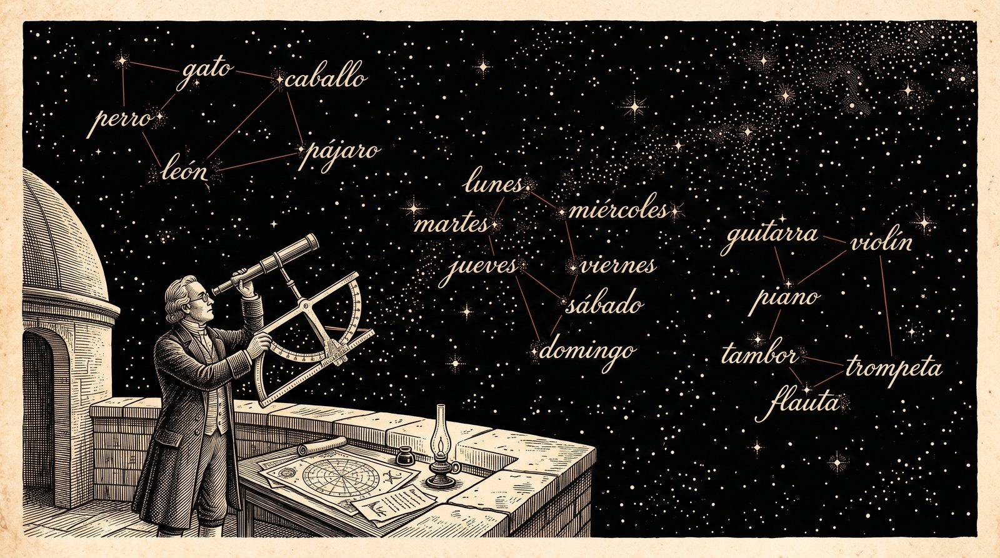

// Utilidades comunes de las simulaciones de la sección 1.1.
s11h = {
const NS = "http://www.w3.org/2000/svg";
const el = (tag, attrs = {}, padre = null) => {
const e = document.createElementNS(NS, tag);
for (const [k, v] of Object.entries(attrs)) e.setAttribute(k, v);
if (padre) padre.append(e);
return e;
};
const texto = (padre, x, y, contenido, attrs = {}) => {
const t = el("text", {x, y, "font-size": 12, fill: "var(--sim-tinta)", ...attrs}, padre);
t.textContent = contenido;
return t;
};
const deslizador = (rotulo, min, max, paso, valor, alCambiar, fmt = v => String(v)) => {
const e = html`<label class="sim-control"><span>${rotulo}</span><input type="range" min=${min} max=${max} step=${paso} value=${valor}><output></output></label>`;
const i = e.querySelector("input"), o = e.querySelector("output");
const pintar = () => { o.value = fmt(+i.value); };
i.oninput = () => { pintar(); alCambiar(); };
pintar();
return {e, get: () => +i.value, set: v => { i.value = v; pintar(); }};
};
const boton = (rotulo, f) => {
const b = html`<button type="button">${rotulo}</button>`;
b.onclick = f;
return b;
};
const fila = (rotulo, botones) => {
const d = html`<div class="sim-mem-botones"><span class="sim-mem-rot">${rotulo}</span></div>`;
d.append(...botones);
return d;
};
const punto = (svg, ev) => {
const p = svg.createSVGPoint();
p.x = ev.clientX; p.y = ev.clientY;
return p.matrixTransform(svg.getScreenCTM().inverse());
};
// Hace arrastrable un elemento del SVG; alMover recibe el punto en coordenadas del SVG.
const arrastrar = (svg, asa, alMover) => {
asa.style.cursor = "grab";
asa.addEventListener("pointerdown", ev => {
ev.preventDefault();
asa.setPointerCapture(ev.pointerId);
const mover = e => alMover(punto(svg, e));
const soltar = () => {
asa.removeEventListener("pointermove", mover);
asa.removeEventListener("pointerup", soltar);
asa.removeEventListener("pointercancel", soltar);
};
asa.addEventListener("pointermove", mover);
asa.addEventListener("pointerup", soltar);
asa.addEventListener("pointercancel", soltar);
});
};
// Puntas de flecha en los tres colores del tema, con identificadores propios de cada lienzo.
const puntas = (svg, prefijo) => {
const defs = el("defs", {}, svg);
for (const [n, c] of [["tinta", "var(--sim-tinta)"], ["acento", "var(--sim-acento)"], ["suave", "var(--sim-suave)"]]) {
const m = el("marker", {id: `${prefijo}-${n}`, viewBox: "0 0 10 10", refX: 9, refY: 5,
markerWidth: 7, markerHeight: 7, orient: "auto-start-reverse"}, defs);
el("path", {d: "M0,0 L10,5 L0,10 z", fill: c}, m);
}
};
// Cuadrícula de un plano con origen en (cx, cy), esc píxeles por unidad y rango unidades por lado.
const plano = (svg, esc, cx, cy, rango) => {
const g = el("g", {}, svg);
for (let k = -rango; k <= rango; k++) {
const w = k === 0 ? 1.3 : 0.6, c = k === 0 ? "var(--sim-suave)" : "var(--sim-regla)";
el("line", {x1: cx + k * esc, y1: cy - rango * esc, x2: cx + k * esc, y2: cy + rango * esc, stroke: c, "stroke-width": w}, g);
el("line", {x1: cx - rango * esc, y1: cy + k * esc, x2: cx + rango * esc, y2: cy + k * esc, stroke: c, "stroke-width": w}, g);
}
return g;
};
const f2 = v => (Math.abs(v) < 0.005 ? 0 : v).toFixed(2);
// Generador pseudoaleatorio con semilla (mulberry32) y normal estándar por Box–Muller.
const azar = semilla => {
let a = semilla >>> 0;
const u = () => {
a = (a + 0x6D2B79F5) >>> 0;
let t = a;
t = Math.imul(t ^ (t >>> 15), t | 1);
t ^= t + Math.imul(t ^ (t >>> 7), t | 61);
return ((t ^ (t >>> 14)) >>> 0) / 4294967296;
};
const normal = () => Math.sqrt(-2 * Math.log(1 - u())) * Math.cos(2 * Math.PI * u());
return {u, normal};
};
return {el, texto, deslizador, boton, fila, punto, arrastrar, puntas, plano, f2, azar};
}1.1 Vectores y producto punto
Publicada el 14 de octubre de 2026
Un ordenador solo sabe hacer una cosa: operar con números. Para que un programa reconozca una foto, traduzca una frase o juegue al go, todo lo que maneja, sea una imagen, una palabra o una posición del tablero, tiene que convertirse antes en números, y esos números tienen que estar ordenados de alguna manera: en filas, en rejillas, en pilas de rejillas. El lector conoce el álgebra lineal de la licenciatura, y buena parte de lo que sigue le resultará familiar. Lo nuevo es el punto de vista: para qué sirve cada concepto en un sistema de inteligencia artificial, qué se calcula de verdad dentro de la máquina y qué cuesta calcularlo.
Esta es la primera de cuatro secciones dedicadas a esas tablas de números. Aquí los vectores se leen como objetos geométricos: flechas que se suman, se estiran y se miden. La herramienta central es el producto punto, un único número que dice a la vez cuánto miden dos vectores y cuánto se parecen, y que reaparecerá en casi cada página del libro. Al terminar, el lector sabrá representar un objeto como un vector, medirlo con varias normas, comparar dos vectores con el producto punto y el ángulo, y habrá reconstruido con datos reales, en español y en inglés, un experimento de psicología de 1957 que medía el significado de las palabras con una regla.
Las tres secciones siguientes construyen sobre esto. 1.2 Similitud y alta dimensión usa el ángulo entre vectores para buscar las palabras más parecidas a una dada, y descubre la extraña geometría de la dimensión alta. 1.3 Proyecciones y matrices proyecta vectores y los transforma con matrices. 1.4 Tensores, broadcasting y einsum lleva todo a tablas con cualquier número de índices, tal como viven en la memoria del ordenador.
1.1.1 Todo es una tabla de números
En 1957, en la Universidad de Illinois, el psicólogo Charles Osgood y sus colaboradores publicaron un libro con un título que sonaba a provocación: La medición del significado (Osgood et al. 1957). Su método era sencillo. Pedían a muchas personas que colocaran una palabra, por ejemplo «padre», en escalas de siete casillas entre dos adjetivos opuestos: bueno o malo, fuerte o débil, rápido o lento, y así hasta decenas de escalas. Cada palabra quedaba convertida en una lista de números, uno por escala. Al analizar miles de respuestas descubrieron algo inesperado: casi toda la variación se explicaba con solo tres ejes, que llamaron evaluación (bueno o malo), potencia (fuerte o débil) y actividad (activo o pasivo). Con ellos, el significado de una palabra, al menos su parte emocional, era un punto en un espacio de tres dimensiones. Estudios posteriores encontraron los mismos tres ejes en decenas de idiomas y culturas (Osgood et al. 1975).
La idea de Osgood, convertir algo que no es un número en una lista de números para poder compararlo, es exactamente la que sostiene la inteligencia artificial de hoy. La diferencia está en la escala y en quién elige los números.
¿Cómo se convierte en números algo que no lo es? La respuesta depende del objeto, pero el resultado tiene siempre la misma forma: una tabla.
Una imagen digital es una rejilla de puntos de color, los píxeles. En una imagen en blanco y negro, cada píxel es un único número, su intensidad de gris, y la imagen entera es una tabla rectangular de números. En color, cada píxel lleva tres números, las intensidades de rojo, verde y azul, de modo que una imagen de 224 \times 224 píxeles, un tamaño habitual en los sistemas de visión, es una pila de tres rejillas: 3 \times 224 \times 224 = 150\,528 números.
Una palabra es más difícil, porque no tiene una traducción numérica evidente. La solución que domina la inteligencia artificial moderna es la de Osgood llevada al extremo: asignar a cada palabra una lista de varios cientos de números, elegidos de manera que las palabras de significado parecido reciban listas parecidas. Esa lista se llama el embedding de la palabra (en español, a veces, vector de representación): son las coordenadas de la palabra en un espacio en el que las palabras afines quedan cerca. Por ejemplo, la versión pequeña de GPT-2, el modelo de lenguaje (un sistema entrenado para predecir la palabra siguiente de un texto) que OpenAI publicó en 2019 (Radford et al. 2019), trabaja con un vocabulario de 50 257 piezas de texto (palabras y fragmentos de palabras, los tokens) y asigna a cada una 768 números. Su tabla de embeddings tiene, por tanto, 50\,257 \times 768 \approx 3.9 \times 10^7 números, que en el formato de 32 bits de 0.2 El laboratorio en 8 GB ocupan unos 154 MB. A diferencia de las escalas de Osgood, esos números no los rellena ninguna persona: el sistema los ajusta solo, leyendo enormes cantidades de texto. Cómo lo hace es una de las historias más bonitas del libro, y la contará el tomo dedicado al lenguaje.
Las palabras «modelo» y «ajustar» merecen una precisión, porque aparecerán en todo el libro. Un modelo es un programa cuyo comportamiento depende de una colección de números ajustables, sus parámetros; entrenar el modelo es buscar automáticamente los valores de los parámetros con los que hace bien su tarea. Una red neuronal es un tipo particular de modelo, construido encadenando muchas operaciones sencillas sobre tablas de números. Los parámetros de una red neuronal, que en los modelos actuales se cuentan por miles de millones, están organizados también como tablas, casi todas rectangulares.
Las tablas que aparecen en la práctica se clasifican por el número de índices que hacen falta para señalar uno de sus números (Figura 1). Un solo número es un escalar. Una fila de números, que se señala con un índice, es un vector. Una tabla rectangular, con dos índices (fila y columna), es una matriz. Y una tabla con tres o más índices, como la pila de rejillas de una imagen en color, es un tensor, el nombre general que 0.2 El laboratorio en 8 GB ya usó para todas ellas.
Un ejemplo para toda la sección. Para no perderse entre cientos de dimensiones, esta sección usa un espacio de juguete en el espíritu de Osgood: cuatro palabras con tres coordenadas cada una, evaluación, potencia y actividad, en una escala de -3 a 3. Los números son inventados, para que las cuentas se hagan de cabeza, pero el lector reconocerá que tienen sentido:
| Palabra | Evaluación | Potencia | Actividad | Vector |
|---|---|---|---|---|
| héroe | 3 | 2 | 2 | h = (3, 2, 2) |
| villano | -3 | 2 | 1 | v = (-3, 2, 1) |
| gatito | 2 | -2 | 1 | g = (2, -2, 1) |
| tormenta | -1 | 3 | 3 | t = (-1, 3, 3) |
Con esta traducción, las preguntas sobre los objetos se convierten en preguntas sobre tablas. La que guía esta sección y la siguiente es la más natural de todas: si cada palabra es un punto de un espacio, ¿qué significa que dos palabras «se parezcan», y cómo se encuentran, entre decenas de miles, las más parecidas a una dada? Responderla exige recordar qué es un vector y aprender a medirlos, que es lo que hace esta sección; la búsqueda misma es el tema de 1.2 Similitud y alta dimensión.

Lo que el lector ya sabe: imágenes, palabras y parámetros se representan como tablas de números, que se clasifican por su número de índices en escalares, vectores, matrices y tensores; y la idea de medir el significado con coordenadas tiene casi setenta años.
1.1.2 Vectores: flechas y listas
Un matemático y un programador dicen «vector» y piensan en cosas distintas. Para el primero, un vector es un elemento de un espacio vectorial: algo que se suma con otros vectores y se multiplica por números, y que en el plano se dibuja como una flecha. Para el segundo, es una lista de números guardada en la memoria. Esta sub-sección explica por qué, en el espacio con el que trabaja todo el libro, las dos ideas coinciden, y qué aporta cada una.
El espacio de trabajo. Ese espacio es \mathbb{R}^d, el conjunto de las listas x = (x_1, \dots, x_d) de d números reales, con la suma y el producto por un escalar coordenada a coordenada: x + y = (x_1 + y_1, \dots, x_d + y_d), \qquad \lambda x = (\lambda x_1, \dots, \lambda x_d). Con estas operaciones, \mathbb{R}^d es el espacio vectorial real de dimensión d que el lector conoce, y la lista (x_1, \dots, x_d) son las coordenadas de x en la base canónica e_1, \dots, e_d, donde e_i tiene un 1 en la posición i y ceros en las demás. Por eso, en \mathbb{R}^d, flecha y lista son el mismo objeto visto de dos maneras. En las fórmulas, el libro escribe los vectores como columnas y llama d a su dimensión. En los modelos de lenguaje, a esa dimensión se la llama también la anchura del modelo: 768 en GPT-2 pequeño, unos miles en los modelos grandes.
Con el ejemplo. La suma del héroe y el villano es h + v = (3 - 3,\ 2 + 2,\ 2 + 1) = (0, 4, 3): las evaluaciones opuestas se cancelan y se refuerza lo que comparten, la fuerza. Y 2h = (6, 4, 4) es «el doble de héroe»: la misma dirección, el doble de largo.
La lectura geométrica. En el plano, x = (2, 1) es la flecha que va del origen al punto (2, 1); sumar dos vectores es poner una flecha a continuación de la otra, y multiplicar por \lambda es estirar la flecha (o darle la vuelta, si \lambda < 0). En \mathbb{R}^{768} no se puede dibujar nada, pero el álgebra es exactamente la misma, y la intuición del plano sirve, con una advertencia importante que se verá en 1.2 Similitud y alta dimensión: algunas propiedades de la dimensión alta no tienen equivalente en el dibujo.
La lectura computacional. En el programa, un vector es una lista de d números de coma flotante guardados uno detrás de otro en la memoria. El libro los maneja con PyTorch, la biblioteca de 0.2 El laboratorio en 8 GB, cuyos tensores admiten las operaciones de \mathbb{R}^d directamente:
# fragmento
import torch
h = torch.tensor([3.0, 2.0, 2.0]) # el héroe: forma (3,)
v = torch.tensor([-3.0, 2.0, 1.0]) # el villano: forma (3,)
print(h + v) # tensor([0., 4., 3.])
print(2 * h) # tensor([6., 4., 4.])La suma h + v se escribe sin ningún bucle: PyTorch suma las tres parejas de coordenadas, la 0 con la 0, la 1 con la 1 y la 2 con la 2, y devuelve otro tensor de forma (3,). Esto no es solo comodidad. Una operación así, que actúa sobre todas las coordenadas a la vez, PyTorch la ejecuta de un tirón con código ya traducido a instrucciones de la máquina y, si los tensores están en la GPU, en paralelo sobre miles de núcleos; un bucle de Python que recorriera las coordenadas una por una sería cientos de veces más lento. Escribir los cálculos como operaciones sobre tablas completas en lugar de bucles se llama vectorizar, y es la primera regla del código numérico. Otras bibliotecas, como NumPy (Harris et al. 2020), siguen las mismas reglas.
Las coordenadas de un embedding no significan nada por separado. Aquí la historia de Osgood da un giro. En su espacio, cada eje tenía nombre, porque lo habían elegido los investigadores: la primera coordenada era la evaluación. Es tentador pensar lo mismo de un embedding aprendido, que la coordenada 17 del de «perro» mide algo, por ejemplo «cuánto de animal» tiene la palabra. En general no es así, y la razón es geométrica. El sistema que aprende los embeddings solo usa las relaciones entre ellos (las distancias y los ángulos, que se definen en la sub-sección siguiente), y esas relaciones no cambian si se giran todos los embeddings a la vez. Un giro cambia todas las coordenadas y no cambia nada de lo que importa, de modo que el entrenamiento no tiene ningún motivo para preferir unos ejes a otros. El significado está en la geometría, no en los ejes. Pero los ejes de Osgood no desaparecen: siguen ahí como direcciones del espacio, aunque no coincidan con ninguna coordenada, y la práctica de esta sección los encontrará. Esta idea, que las transformaciones que conservan la geometría no cambian el contenido, se formaliza en 1.6 Grupos, rotaciones y equivarianciamás adelante en este capítulo.
Combinaciones lineales. Las operaciones de \mathbb{R}^d tienen lectura directa sobre los embeddings. La diferencia x - y entre dos embeddings es una dirección: el desplazamiento que lleva de una palabra a otra. En el ejemplo, h - v = (6, 0, 1) va del villano al héroe, y casi todo su recorrido es evaluación. Y una combinación lineal \lambda_1 x_1 + \dots + \lambda_n x_n mezcla varias representaciones. La mezcla más sencilla, el promedio, da la primera representación de un grupo de palabras: la idea es la del centro de gravedad de varios objetos de igual masa.
Definición 1 (Centroide) El centroide de los vectores x_1, \dots, x_n \in \mathbb{R}^d es su media, m = \frac{1}{n} \sum_{i=1}^{n} x_i .
Qué dice. Se suman los n vectores coordenada a coordenada y se divide el resultado por n: cada coordenada de m es la media de esa coordenada en todos los vectores. Geométricamente, m es el punto de equilibrio de la nube de puntos.
Ejemplo. El centroide del héroe y el villano es m = \tfrac{1}{2}(h + v) = \tfrac{1}{2}(0, 4, 3) = (0, 2, 1.5): evaluación neutra, porque una buena y una mala se compensan; potencia 2, porque los dos son fuertes; actividad intermedia. Una propiedad que conviene comprobar: las desviaciones respecto del centroide suman cero, (h - m) + (v - m) = (3, 0, 0.5) + (-3, 0, -0.5) = (0, 0, 0), como en cualquier media.
Si x_1, \dots, x_n son los embeddings de las palabras de una frase, su centroide es una representación de la frase entera, y sorprendentemente útil para su sencillez: frases que hablan de lo mismo tienen centroides cercanos. Su límite también es evidente. La media no depende del orden de los sumandos, de modo que «el perro muerde al hombre» y «el hombre muerde al perro» reciben exactamente el mismo vector. Representar el orden de las palabras es uno de los problemas que resolverán las arquitecturas que el libro construye para el lenguaje. En 1.3 Proyecciones y matrices se demuestra además que el centroide es el punto que minimiza la suma de los cuadrados de las distancias a los x_i, y con esa propiedad se construye un algoritmo para agrupar palabras.
Lo que el lector ya sabe: en \mathbb{R}^d un vector es a la vez flecha y lista de coordenadas; el programa lo guarda como un tensor y opera con él sin bucles; las coordenadas de un embedding no tienen significado propio, pero su geometría sí; y la media de embeddings representa, toscamente, un grupo de palabras.
1.1.3 El producto punto y las normas
Osgood podía comparar dos palabras mirando sus tres números: el héroe y el villano coinciden en potencia y se oponen en evaluación. Con 300 coordenadas sin nombre, mirar no sirve. Hacen falta dos instrumentos: uno que resuma en un solo número si dos vectores apuntan hacia el mismo lado, y otro que diga cuánto mide un vector. El primero es el producto punto; el segundo, la norma.
El producto punto. Es la operación más repetida de toda la inteligencia artificial moderna. Cada entrada de un producto de matrices es uno de ellos (0.3 Medir sin engañarse), y un modelo de lenguaje calcula miles de millones de productos punto por cada palabra que escribe. La idea es la de un recuento de acuerdos: se compara coordenada a coordenada y se suma.
Definición 2 (Producto punto) El producto punto (o producto escalar euclídeo) de x, y \in \mathbb{R}^d es x \cdot y = \sum_{i=1}^{d} x_i y_i = x^\top y .
Qué dice. Se multiplican las coordenadas que ocupan la misma posición y se suman los d productos: el resultado es un número, no un vector. La segunda escritura, x^\top y, trata x e y como columnas: x^\top es la fila que resulta de tumbar x, y el producto de una fila por una columna es precisamente esa suma de productos. El producto punto es bilineal, simétrico y definido positivo (x \cdot x > 0 si x \neq 0): es el producto interior canónico de \mathbb{R}^d.
Ejemplo. Con el espacio de juguete: h \cdot v = 3 \cdot (-3) + 2 \cdot 2 + 2 \cdot 1 = -9 + 4 + 2 = -3, \qquad h \cdot t = 3 \cdot (-1) + 2 \cdot 3 + 2 \cdot 3 = -3 + 6 + 6 = 9 . Cada sumando cuenta una coordenada: es positivo cuando las dos coordenadas tienen el mismo signo (las dos palabras «están de acuerdo» en ese eje) y negativo cuando lo tienen opuesto. El héroe y el villano están de acuerdo en potencia (+4) y actividad (+2), pero su desacuerdo en evaluación (-9) pesa más: el total es negativo. El héroe y la tormenta discrepan un poco en evaluación (-3) y coinciden mucho en todo lo demás (+12): el total es claramente positivo.
Esa es la lectura que conviene tener presente siempre: el producto punto es un puntaje de coincidencia. Es grande y positivo cuando los vectores están de acuerdo en muchas coordenadas, cercano a cero cuando no tienen nada que ver y negativo cuando se oponen. Así se usa en los sistemas modernos. El mecanismo de atención del Transformer, la arquitectura sobre la que se construyen los modelos de lenguaje actuales, decide a qué palabras de una frase prestar atención comparándolas entre sí con productos punto: cuando el libro construya su propio Transformer, este mismo puntaje será su corazón (12.1 Atención de producto punto escaladomás adelante en el libro).
Un producto punto que se oye. El recuento de acuerdos se puede escuchar. Un acorde es un grupo de notas que suenan a la vez, y se puede escribir como un vector de doce ceros y unos, uno por cada nota de la octava: Do mayor, formado por Do, Mi y Sol, es (1, 0, 0, 0, 1, 0, 0, 1, 0, 0, 0, 0). Con vectores de ceros y unos, cada sumando x_i y_i vale 1 solo si las dos notas suenan, de modo que el producto punto de dos acordes cuenta las notas que comparten. El coseno, que se presenta un poco más abajo, lo divide por el tamaño de cada uno.
Simulación 1.1.1
Qué representa cada mando. El teclado tiene las doce notas de una octava, de Do a Si; pulsar una tecla la añade al acorde o la quita. El acorde es el vector x \in \{0, 1\}^{12} con un 1 en cada nota pulsada. A la derecha se comparan con él los 24 acordes de tres notas más usados de la música occidental (12 mayores y 12 menores), cada uno con su propio vector y: la columna notas comunes es el producto punto x \cdot y y la columna coseno lo divide por \|x\|\,\|y\|. Escuchar toca el acorde con el sintetizador del navegador; los botones Pruebe cargan los acordes que comenta el texto.
Antes de tocar. El acorde Todo el teclado tiene las doce notas a la vez. ¿Qué acorde de tres notas se le parece más según el producto punto?
- Do mayor, el primero de la lista.
- Ninguno en particular: empata con los 24, con producto punto 3.
- Ninguno: su producto punto con cualquier acorde es 0.
- Do mayor con séptima, porque también tiene muchas notas.
Lo que pasa. Empata con los 24: cualquier acorde de tres notas comparte sus tres notas con el teclado entero, así que el producto punto vale 3 con todos, el máximo posible. Y precisamente por eso no sirve para comparar: un vector «que lo tiene todo» coincide con todo. El coseno lo delata, como verá en la tabla: 3/\sqrt{3 \cdot 12} = 0.5 con todos, la mitad del parecido perfecto.
Cada acorde es un vector de doce ceros y unos. El producto punto cuenta las notas que dos acordes comparten; el coseno corrige por el número de notas de cada uno.
Con Do mayor y La menor aparece el parentesco que los músicos llaman de acordes relativos: comparten dos de sus tres notas, Do y Mi, así que su producto punto vale 2 y su coseno, 2/3; suenan distintos, pero emparentados. Do mayor con séptima añade el Si: ya no coincide con ningún acorde de tres notas, y los dos más parecidos, Do mayor y Mi menor, empatan con coseno 3/\sqrt{12} \approx 0.87. Dos notas vecinas, Do y Do♯, un intervalo áspero, no se parece mucho a nada. Y Todo el teclado es la trampa de la predicción: comparte tres notas con cualquier acorde y no se parece a ninguno en particular. Es la misma trampa del producto punto que reaparecerá en la búsqueda de palabras, donde los vectores «grandes» parecen parecidos a todo.
Las normas. Medir el tamaño de un vector parece fácil, y lo es, pero hay más de una manera razonable de hacerlo, y cada una se usa en algún lugar del libro. Lo que todas tienen en común son tres exigencias que cualquiera pediría a una «longitud»: solo el vector nulo mide cero, estirar un vector multiplica su longitud por el mismo factor, y un rodeo nunca es más corto que el camino directo.
Definición 3 (Norma) Una norma en \mathbb{R}^d es una función \|\cdot\| : \mathbb{R}^d \to [0, \infty) tal que, para todos x, y \in \mathbb{R}^d y \lambda \in \mathbb{R}:
- \|x\| = 0 solo si x = 0;
- \|\lambda x\| = |\lambda|\, \|x\|;
- \|x + y\| \le \|x\| + \|y\| (desigualdad triangular).
Para 1 \le p < \infty, la norma \ell_p es \|x\|_p = \left( \sum_{i=1}^{d} |x_i|^p \right)^{1/p}, y la norma \ell_\infty es \|x\|_\infty = \max_i |x_i|.
Qué dice. El primer párrafo son las tres exigencias, escritas con símbolos: la 1 dice que solo el vector nulo mide cero; la 2, que el doble de un vector mide el doble (y que darle la vuelta no cambia su longitud: |-1| = 1); la 3, que ir de 0 a x + y pasando por x nunca es más corto que ir directamente. El segundo párrafo da una familia de normas concretas. En la norma \ell_p se elevan los valores absolutos de las coordenadas a p, se suman y se saca la raíz p-ésima; cuanto mayor es p, más pesa la coordenada mayor, y en el límite p \to \infty solo cuenta ella: eso es \ell_\infty.
Ejemplo. Para el héroe, h = (3, 2, 2): \|h\|_1 = 3 + 2 + 2 = 7, \qquad \|h\|_2 = \sqrt{9 + 4 + 4} = \sqrt{17} \approx 4.12, \qquad \|h\|_\infty = \max(3, 2, 2) = 3 .
Tres casos importan. La norma \ell_2, \|x\|_2 = \sqrt{x \cdot x}, es la longitud de la flecha, la que da el teorema de Pitágoras; cuando el libro escribe \|x\| sin subíndice se refiere a ella. La norma \ell_1 suma los valores absolutos de las coordenadas, como la distancia que recorre un taxi en una ciudad de calles perpendiculares (Figura 3). La norma \ell_\infty se queda con la coordenada mayor, como quien solo se preocupa por el peor caso. La Figura 4 las muestra a la vez, dibujando los vectores del plano de norma 1 para cada una. (Para 0 < p < 1 la fórmula de \ell_p no define una norma: falla la desigualdad triangular; 1.1.4 Demostraciones formales y justificaciones da el contraejemplo.)

El producto punto y la longitud, atados. El producto punto y la norma \ell_2 están ligados por la desigualdad más útil del álgebra lineal. La idea: el acuerdo entre dos vectores nunca puede superar el producto de sus tamaños, igual que dos personas no pueden coincidir en más de lo que cada una dice.
Teorema 1 (Desigualdad de Cauchy–Schwarz) Para todos x, y \in \mathbb{R}^d, \ |x \cdot y| \le \|x\|\, \|y\|, con igualdad si y solo si x e y son linealmente dependientes.
Qué dice. El valor absoluto del producto punto está acotado por el producto de las dos longitudes. La cota se alcanza solo cuando los vectores están en la misma recta (uno es múltiplo del otro): entonces el acuerdo es total, a favor o en contra.
Ejemplo. Para el héroe y el villano, |h \cdot v| = 3, mientras que \|h\|\,\|v\| = \sqrt{17}\,\sqrt{14} = \sqrt{238} \approx 15.43: el acuerdo neto es pequeño frente a lo que podría ser. Para el héroe y «el doble de héroe», h \cdot 2h = 2 \cdot 17 = 34 y \|h\|\,\|2h\| = \sqrt{17} \cdot 2\sqrt{17} = 34: igualdad, porque están en la misma recta.
La desigualdad lleva el nombre de Augustin-Louis Cauchy, que la publicó en 1821 para sumas, y de Hermann Schwarz, que en 1888 la extendió a integrales; Viktor Bunyakovsky lo había hecho ya en 1859, y en algunos países se la llama con los tres nombres (Steele 2004). Su demostración, con una idea de la escuela (el discriminante de una parábola), está en 1.1.4 Demostraciones formales y justificaciones.
El ángulo. Gracias a Cauchy–Schwarz, si x, y \neq 0, el cociente x \cdot y / (\|x\|\,\|y\|) está siempre en [-1, 1], y existe un único \theta \in [0, \pi], el ángulo entre x e y, con x \cdot y = \|x\|\, \|y\| \cos\theta . Esta es la lectura geométrica del producto punto: mezcla dos informaciones, el tamaño de los vectores y el ángulo que forman. En el ejemplo, \cos\theta = -3/15.43 \approx -0.19 para el héroe y el villano, un ángulo de unos 101°: algo más que perpendiculares, levemente opuestos. Para el héroe y la tormenta, \cos\theta = 9/(\sqrt{17}\sqrt{19}) \approx 0.50, un ángulo de unos 60°. El cociente \cos\theta, que separa el ángulo del tamaño, se llama similitud coseno, y es el instrumento central de 1.2 Similitud y alta dimensión.
El programa siguiente hace en PyTorch todas las cuentas del ejemplo. La función torch.linalg.vector_norm(x, ord=p) calcula la norma \ell_p; @ entre dos vectores es su producto punto, y torch.arccos da el ángulo en radianes, que torch.rad2deg pasa a grados. Guárdelo como medir_vectores.py y ejecútelo con python medir_vectores.py:
# archivo: medir_vectores.py
import torch
# Coordenadas (evaluación, potencia, actividad) en una escala de −3 a 3, inventadas para el ejemplo.
heroe = torch.tensor([3.0, 2.0, 2.0])
villano = torch.tensor([-3.0, 2.0, 1.0])
tormenta = torch.tensor([-1.0, 3.0, 3.0])
print("héroe + villano:", heroe + villano)
print("centroide: ", torch.stack([heroe, villano]).mean(dim=0))
print("héroe · villano:", (heroe * villano).sum().item())
print("héroe · tormenta:", (heroe @ tormenta).item())
for p in (1, 2, float("inf")):
print(f"norma {p} del héroe:", round(torch.linalg.vector_norm(heroe, ord=p).item(), 3))
cos = (heroe @ tormenta) / (heroe.norm() * tormenta.norm())
print("coseno héroe–tormenta:", round(cos.item(), 3), " ángulo en grados:", round(torch.rad2deg(torch.arccos(cos)).item(), 1))Dos líneas merecen una mirada. torch.stack([heroe, villano]) apila los dos vectores, de forma (3,) cada uno, como filas de una tabla de forma (2, 3); .mean(dim=0) promedia a lo largo del eje 0, el de las filas, que desaparece, y deja un vector de forma (3,): el centroide. Y el producto punto aparece escrito de dos maneras equivalentes: (heroe * villano).sum(), que multiplica coordenada a coordenada (forma (3,)) y suma (un número), y heroe @ tormenta, que hace lo mismo en una sola operación.
Lo que debe ver. Exactamente esto, en cualquier máquina:
héroe + villano: tensor([0., 4., 3.])
centroide: tensor([0.0000, 2.0000, 1.5000])
héroe · villano: -3.0
héroe · tormenta: 9.0
norma 1 del héroe: 7.0
norma 2 del héroe: 4.123
norma inf del héroe: 3.0
coseno héroe–tormenta: 0.501 ángulo en grados: 59.9Cada línea es una cuenta hecha antes a mano. Si su terminal muestra mal las tildes o los signos «·» y «–», el programa es correcto: es la configuración de caracteres de la terminal.
Cuánto difieren las normas. En el ejemplo, las tres normas del héroe son 3, 4.12 y 7: distintas, pero del mismo orden. ¿Puede una ser enormemente mayor que otra? Sí, y la dimensión decide cuánto. La proposición siguiente da la respuesta exacta: un sándwich de desigualdades en el que las constantes crecen con d.
Proposición 1 (Comparación de las normas \ell_1, \ell_2 y \ell_\infty) Para todo x \in \mathbb{R}^d, \|x\|_\infty \;\le\; \|x\|_2 \;\le\; \|x\|_1 \;\le\; \sqrt{d}\, \|x\|_2 \;\le\; d\, \|x\|_\infty . Las dos primeras desigualdades son igualdades para x = e_1, y las dos últimas, para x = (1, 1, \dots, 1).
Qué dice. Ordenadas de menor a mayor, las normas son \ell_\infty, \ell_2 y \ell_1, y ninguna se aleja de las otras más que un factor \sqrt{d} o d. Los dos casos extremos son los dos tipos de vector posibles. Un vector concentrado, con toda su masa en una coordenada como e_1 = (1, 0, \dots, 0), mide 1 con las tres normas: no hay nada que sumar. Un vector repartido, con todas las coordenadas iguales como (1, 1, \dots, 1), mide 1 con \ell_\infty, \sqrt{d} con \ell_2 y d con \ell_1: cada norma ve el reparto de una manera distinta.
Ejemplo. Para el héroe, con d = 3: 3 \le 4.12 \le 7 \le \sqrt{3} \cdot 4.12 \approx 7.14 \le 3 \cdot 3 = 9. La cadena se cumple, y holgadamente en los extremos, porque el héroe no es ni concentrado ni repartido del todo. En \mathbb{R}^{768}, el vector repartido con todas sus coordenadas iguales a 0.1 mide 0.1 con \ell_\infty, \sqrt{768} \cdot 0.1 \approx 2.77 con \ell_2 y 76.8 con \ell_1: un factor 768 entre la menor y la mayor.
Demostración. La estrategia es comparar cuadrados, que evitan las raíces, y usar Cauchy–Schwarz para la única desigualdad que no es un simple recuento. Sea j una coordenada donde se alcanza el máximo, \|x\|_\infty = |x_j|.
Paso 1: \|x\|_\infty \le \|x\|_2. Un solo sumando no supera la suma de todos, que son no negativos: \|x\|_\infty^2 = x_j^2 \le \sum_i x_i^2 = \|x\|_2^2.
Paso 2: \|x\|_2 \le \|x\|_1. Al desarrollar el cuadrado de una suma aparecen los cuadrados y además los productos cruzados, que aquí son no negativos: \|x\|_1^2 = \bigl(\sum_i |x_i|\bigr)^2 = \sum_i x_i^2 + \sum_{i \neq k} |x_i|\,|x_k| \ge \sum_i x_i^2.
Paso 3: \|x\|_1 \le \sqrt{d}\,\|x\|_2. Es Cauchy–Schwarz aplicada a los vectores a = (|x_1|, \dots, |x_d|) y \mathbf{1} = (1, \dots, 1): \|x\|_1 = a \cdot \mathbf{1} \le \|a\|_2\, \|\mathbf{1}\|_2 = \|x\|_2 \sqrt{d}.
Paso 4: \sqrt{d}\,\|x\|_2 \le d\,\|x\|_\infty. Cada sumando es como mucho el mayor: \|x\|_2^2 = \sum_i x_i^2 \le d\, x_j^2, y tomando raíces, \|x\|_2 \le \sqrt{d}\,\|x\|_\infty; basta multiplicar por \sqrt{d}.
Casos de igualdad. Para e_1, las tres normas valen 1. Para \mathbf{1}, valen 1, \sqrt{d} y d, y \sqrt{d} \cdot \sqrt{d} = d = d \cdot 1. En el paso 3, la igualdad de Cauchy–Schwarz exige que a y \mathbf{1} estén en la misma recta: que todos los |x_i| sean iguales, que es exactamente el vector repartido.
La proposición dice que todas estas normas son equivalentes, como en cualquier espacio de dimensión finita, pero con constantes que crecen con la dimensión. La consecuencia práctica es una advertencia: un umbral pensado para una norma no se traslada a otra sin corregir por la dimensión. Y la razón \|x\|_1 / \|x\|_2, que va de 1 (concentrado) a \sqrt{d} (repartido), mide cuántas coordenadas «participan» en un vector; el Ejercicio 6 lo precisa, y la práctica la mide en embeddings reales, con un resultado sorprendente.
Las normas se usan en todo el libro para vigilar tamaños. Durante el entrenamiento, el modelo corrige sus parámetros una y otra vez, y la norma de esas correcciones indica si el proceso marcha bien o se está desbocando: cuando una corrección es demasiado grande, se la recorta a una norma máxima. Y penalizar la norma de los parámetros es una de las maneras clásicas de evitar que el modelo se aprenda de memoria los datos.
Todo está en el producto punto. Una última identidad cierra el círculo. Si se conocen todas las longitudes, ¿se conocen todos los productos punto? Sí: desarrollando \|x \pm y\|^2 = \|x\|^2 \pm 2\, x \cdot y + \|y\|^2 y restando las dos versiones, los cuadrados se cancelan y queda la identidad de polarización, x \cdot y = \tfrac{1}{4} \left( \|x + y\|^2 - \|x - y\|^2 \right). Comprobación con el ejemplo. h + v = (0, 4, 3) mide \sqrt{25} = 5 y h - v = (6, 0, 1) mide \sqrt{37}, así que \tfrac{1}{4}(25 - 37) = -3 = h \cdot v. Quien conoce todas las longitudes conoce todos los productos punto, y por tanto todos los ángulos: la geometría entera de un conjunto de embeddings está en sus productos punto. Esta identidad solo funciona con \ell_2, y el Ejercicio 5 explica por qué ninguna otra norma \ell_p viene de un producto punto.
Osgood comparaba palabras mirando sus coordenadas. Sesenta años después, con cientos de coordenadas sin nombre, la comparación es un producto punto, y lo que queda de sus ejes son direcciones escondidas en el espacio. La práctica de esta sección va a buscarlas.
Lo que el lector ya sabe: calcular productos punto y normas, leer el producto punto como un puntaje de coincidencia que mezcla tamaño y ángulo, acotarlo con Cauchy–Schwarz, calcular el ángulo entre dos vectores y comparar las normas \ell_1, \ell_2 y \ell_\infty con constantes que dependen de la dimensión.
1.1.4 Demostraciones formales y justificaciones
Casi todos los resultados de esta sección se han demostrado en su sitio, porque sus pruebas son cortas y ayudan a entenderlos. Esta sub-sección reúne las que interrumpirían la lectura: la desigualdad de Cauchy–Schwarz, que 1.1.3 El producto punto y las normas usó sin probar, y el hecho de que todas las \ell_p con p \ge 1 sean de verdad normas.
La desigualdad de Cauchy–Schwarz
La demostración clásica usa una idea de la escuela: una parábola que nunca baja de cero no puede cortar el eje en dos puntos, así que su discriminante no es positivo. La parábola se fabrica con la norma, que nunca es negativa.
Demostración (Demostración de la desigualdad de Cauchy–Schwarz (Teorema 1)). Paso 1: el caso sin interés. Si y = 0, los dos miembros valen 0 y x, y son linealmente dependientes; la igualdad se cumple. En adelante, y \neq 0.
Paso 2: la parábola. Para cada número real t, el vector x - t\,y tiene una norma al cuadrado que no puede ser negativa. Desarrollándola con las propiedades del producto punto (bilineal y simétrico), f(t) = \|x - t\,y\|^2 = (x - t\,y) \cdot (x - t\,y) = \|x\|^2 - 2t\,(x \cdot y) + t^2\,\|y\|^2 \ \ge\ 0 . Es una parábola en t con coeficiente principal \|y\|^2 > 0, que nunca baja de cero.
Paso 3: el discriminante. Una parábola a t^2 + b t + c con a > 0 que nunca es negativa tiene a lo sumo una raíz real, de modo que su discriminante cumple b^2 - 4ac \le 0. Aquí a = \|y\|^2, b = -2\,(x \cdot y) y c = \|x\|^2: 4\,(x \cdot y)^2 - 4\,\|x\|^2\,\|y\|^2 \ \le\ 0 \quad\Longleftrightarrow\quad |x \cdot y| \le \|x\|\,\|y\| .
Paso 4: cuándo hay igualdad. El discriminante vale 0 exactamente cuando la parábola toca el cero en algún t_0, es decir, cuando \|x - t_0\, y\| = 0, o sea x = t_0\, y: x es un múltiplo de y. Recíprocamente, si x = \lambda y, los dos miembros valen |\lambda|\,\|y\|^2.
Se ha demostrado que el acuerdo entre dos vectores está acotado por el producto de sus longitudes, y que la cota solo se alcanza en una misma recta; de ahí sale el ángulo entre dos vectores.
Comprobación con el ejemplo. Con el héroe, h = (3, 2, 2), y el villano, v = (-3, 2, 1), la parábola es f(t) = \|h - t\,v\|^2 = 17 + 6t + 14t^2, con a = \|v\|^2 = 14, b = -2\,(h \cdot v) = 6 y c = \|h\|^2 = 17. Su discriminante, 36 - 4 \cdot 14 \cdot 17 = -916, es negativo: la parábola nunca toca el cero, porque el héroe no es múltiplo del villano, y la desigualdad es estricta: 3 < 15.43. La proyección de 1.3 Proyecciones y matrices dará una segunda demostración, más geométrica: el número t que hace mínima la parábola, t = (x \cdot y)/\|y\|^2, es justamente el que da la sombra de x sobre y.
La consecuencia inmediata es que la norma \ell_2 cumple la desigualdad triangular, porque \|x + y\|^2 = \|x\|^2 + 2\, x \cdot y + \|y\|^2 \;\le\; \|x\|^2 + 2\|x\|\,\|y\| + \|y\|^2 = (\|x\| + \|y\|)^2 .
Las normas \ell_p son normas
La Definición 3 afirmaba que todas las \ell_p con p \ge 1 son normas. Las dos primeras propiedades salen directamente de la fórmula; la difícil es la tercera, la desigualdad triangular. Para p = 1 y p = \infty basta la desigualdad triangular de los números reales, coordenada a coordenada. Para 1 < p < \infty hace falta un camino en dos etapas: primero una generalización de Cauchy–Schwarz (Hölder) y después, con ella, la desigualdad triangular (Minkowski). Se llama exponente conjugado de p al número q = p/(p-1), que cumple \frac{1}{p} + \frac{1}{q} = 1; para p = 2, q = 2, y para p = 3, q = 3/2.
Proposición 2 (Hölder y Minkowski) Sean 1 < p < \infty y q su exponente conjugado. Para todos x, y \in \mathbb{R}^d:
- (Hölder) \ \sum_i |x_i y_i| \le \|x\|_p\, \|y\|_q;
- (Minkowski) \ \|x + y\|_p \le \|x\|_p + \|y\|_p.
Qué dice. Hölder es Cauchy–Schwarz con las longitudes medidas por dos normas «complementarias»: si a un vector se le mide con \ell_p, al otro hay que medirlo con \ell_q. Para p = q = 2 es exactamente Cauchy–Schwarz. Minkowski es la desigualdad triangular de \ell_p: el rodeo nunca es más corto.
Ejemplo. Con x = (1, 2), y = (3, 1) y p = 3, q = 3/2: \sum_i |x_i y_i| = 3 + 2 = 5, mientras que \|x\|_3 = 9^{1/3} \approx 2.080 y \|y\|_{3/2} = (3^{3/2} + 1)^{2/3} \approx 3.374, de producto 7.02 \ge 5. Para Minkowski, x + y = (4, 3) y \|x + y\|_3 = 91^{1/3} \approx 4.498, frente a \|x\|_3 + \|y\|_3 \approx 2.080 + 3.037 = 5.117.
Demostración. La estrategia: una desigualdad entre dos números (Young) se aplica coordenada a coordenada y se suma (Hölder); después, Hölder se usa dos veces sobre la desigualdad triangular de cada coordenada (Minkowski).
Paso 1: la desigualdad de Young. Para a, b > 0, la concavidad del logaritmo (la media de dos logaritmos no supera el logaritmo de la media, con pesos \tfrac{1}{p} y \tfrac{1}{q} que suman 1) da \log\left( \frac{a^p}{p} + \frac{b^q}{q} \right) \ \ge\ \frac{1}{p} \log a^p + \frac{1}{q} \log b^q = \log a + \log b = \log(ab), es decir, ab \le a^p/p + b^q/q. Si a o b valen 0, la desigualdad es evidente, porque el miembro izquierdo vale 0.
Paso 2: Hölder. Si x = 0 o y = 0 no hay nada que probar. En otro caso, se aplica Young a cada coordenada con a = |x_i| / \|x\|_p y b = |y_i| / \|y\|_q, y se suman las d desigualdades: \frac{\sum_i |x_i y_i|}{\|x\|_p\, \|y\|_q} \ \le\ \frac{1}{p} \frac{\sum_i |x_i|^p}{\|x\|_p^p} + \frac{1}{q} \frac{\sum_i |y_i|^q}{\|y\|_q^q} = \frac{1}{p} \cdot 1 + \frac{1}{q} \cdot 1 = 1 , porque \sum_i |x_i|^p = \|x\|_p^p por definición.
Paso 3: Minkowski. Si x + y = 0 no hay nada que probar. En otro caso, se separa un factor y se usa la desigualdad triangular de los números, |x_i + y_i| \le |x_i| + |y_i|: \|x + y\|_p^p = \sum_i |x_i + y_i|\, |x_i + y_i|^{p-1} \ \le\ \sum_i |x_i|\, |x_i + y_i|^{p-1} + \sum_i |y_i|\, |x_i + y_i|^{p-1} . Se aplica Hölder a cada suma, con el vector de entradas w_i = |x_i + y_i|^{p-1}. Como (p - 1) q = p, su norma \ell_q es \bigl( \sum_i |x_i + y_i|^{p} \bigr)^{1/q} = \|x + y\|_p^{p/q} = \|x + y\|_p^{p-1}. Queda \|x + y\|_p^p \le (\|x\|_p + \|y\|_p)\, \|x + y\|_p^{p-1}, y basta dividir por \|x + y\|_p^{p-1} > 0.
Se ha demostrado que todas las \ell_p con p \ge 1 cumplen la desigualdad triangular, y por tanto son normas.
Por qué p \ge 1. La restricción es necesaria. Si 0 < p < 1, los vectores e_1 = (1, 0) y e_2 = (0, 1) tienen «norma» \ell_p igual a 1, pero \|e_1 + e_2\|_p = (1^p + 1^p)^{1/p} = 2^{1/p} > 2 = \|e_1\|_p + \|e_2\|_p , porque 1/p > 1; con p = 1/2, el rodeo mide 2 y el camino directo, 4. Geométricamente, la «bola unidad» de \ell_p con p < 1 es una estrella de lados cóncavos, no un conjunto convexo como los de la Figura 4.
1.1.5 Ejercicios teóricos resueltos
Los ejercicios practican las herramientas de la sección y llevan cada una un poco más lejos que el texto. Están ordenados por dificultad: los básicos aplican una idea con cálculos directos, los medios combinan dos ideas o piden un razonamiento corto y los difíciles piden una demostración o un análisis completo. Todos se resuelven con lápiz y papel, y conviene intentar cada uno antes de desplegar su solución. Las cifras de la GPU del laboratorio son las de 0.3 Medir sin engañarse: un máximo de 14.56 \times 10^{12} FLOP/s en 32 bits.
Ejercicio 1 · básico. Tres normas de un mismo vector
Sea x = (2, -1, 0, 2) \in \mathbb{R}^4.
Calcule \|x\|_1, \|x\|_2 y \|x\|_\infty, y compruebe la cadena de la Proposición 1.
Sin calcular nada más, ¿qué vectores de \mathbb{R}^4 cumplen \|x\|_1 = 2\,\|x\|_2? Dé uno con todas sus coordenadas distintas de 0.
NotaSolución
\|x\|_1 = 2 + 1 + 0 + 2 = 5, \|x\|_2 = \sqrt{4 + 1 + 0 + 4} = 3 y \|x\|_\infty = 2. La cadena, con d = 4 y \sqrt{d} = 2, es 2 \le 3 \le 5 \le 2 \cdot 3 = 6 \le 4 \cdot 2 = 8: se cumple, sin ninguna igualdad.
\|x\|_1 = 2\|x\|_2 = \sqrt{4}\,\|x\|_2 es el caso de igualdad de la tercera desigualdad. Su demostración (paso 3) usa Cauchy–Schwarz entre (|x_1|, \dots, |x_4|) y (1, 1, 1, 1), con igualdad solo si son proporcionales: todas las coordenadas deben tener el mismo valor absoluto. Por ejemplo, (1, -1, 1, -1): \|x\|_1 = 4 y \|x\|_2 = 2. Los signos no importan; lo que cuenta es que la masa esté repartida por igual.
Ejercicio 2 · básico. Acordes que no se tocan
Con la codificación de los acordes de 1.1.3 El producto punto y las normas (un vector de doce ceros y unos):
Calcule el producto punto y el coseno entre Do mayor (Do, Mi, Sol) y Do mayor con séptima (Do, Mi, Sol, Si).
Encuentre un acorde mayor de tres notas cuyo producto punto con Do mayor sea 0. ¿Cuál es el ángulo entre los dos vectores?
¿Puede el producto punto de dos acordes ser negativo? ¿Qué dice eso de los ángulos posibles entre vectores de ceros y unos?
NotaSolución
Comparten tres notas: producto punto 3. Las normas son \sqrt{3} y \sqrt{4} = 2, y el coseno es 3/(2\sqrt{3}) = \sqrt{3}/2 \approx 0.866: un ángulo de 30°.
Hay que evitar Do, Mi y Sol. Re mayor (Re, Fa♯, La) no comparte ninguna: producto punto 0, coseno 0 y ángulo de 90°. Dos acordes sin notas comunes son vectores perpendiculares.
No. Cada sumando x_i y_i es 0 o 1, así que el producto punto es como mínimo 0, y el coseno también. Entre vectores de coordenadas no negativas, el ángulo está siempre entre 0° y 90°: nunca hay oposición, solo más o menos coincidencia. Por eso los acordes no tienen «contrarios», mientras que el héroe y el villano sí: sus coordenadas tienen signos.
Ejercicio 3 · medio. Cuántos productos punto para elegir una palabra
En GPT-2 pequeño, el último paso antes de elegir la palabra siguiente compara un vector de 768 números con los 50 257 embeddings del vocabulario mediante un producto punto con cada uno, y elige entre las palabras con los puntajes más altos.
¿Cuántas operaciones aritméticas (multiplicaciones y sumas) hace ese paso por cada palabra que escribe el modelo?
A la velocidad máxima de la GPU del laboratorio, ¿cuánto tardaría? ¿Y para escribir una página de 500 palabras?
Un modelo grande tiene una anchura de 8 192 y un vocabulario de 128 000 piezas. ¿Por qué factor se multiplica el costo de este paso?
NotaSolución
Cada producto punto de vectores de \mathbb{R}^{768} hace 768 multiplicaciones y 767 sumas, unas 2 \times 768 operaciones. Con 50 257 palabras: 2 \times 768 \times 50\,257 \approx 7.7 \times 10^7 operaciones por palabra escrita.
7.7 \times 10^7 / (14.56 \times 10^{12}) \approx 5.3 \times 10^{-6} segundos, unos 5 microsegundos; para 500 palabras, unos 2.7 milisegundos. En la práctica tarda más, porque la GPU rara vez alcanza su máximo con una sola operación de este tamaño (0.3 Medir sin engañarse), pero el orden de magnitud dice que este paso no es el cuello de botella.
El costo es proporcional a la anchura por el vocabulario: (8\,192 \times 128\,000)/(768 \times 50\,257) \approx 27. Un modelo grande hace unas 27 veces más operaciones solo en este último paso, unas 2 \times 10^9 por palabra.
Ejercicio 4 · medio. Encuentre el error: un umbral que no se traslada
Un programa de entrenamiento recorta cada corrección de los parámetros cuando su norma \ell_2 pasa de 1. Un colega propone ahorrar tiempo usando la norma \ell_\infty, «que es más fácil de calcular», con el mismo umbral: recortar cuando el mayor valor absoluto pase de 1. El modelo tiene d = 10^6 parámetros.
¿Qué corrección máxima, medida con \ell_2, deja pasar la regla del colega?
¿Qué umbral para \ell_\infty garantizaría que \|x\|_2 \le 1? ¿Por qué es una mala solución?
NotaSolución
La regla del colega acepta todo vector con \|x\|_\infty \le 1. Por la Proposición 1, \|x\|_2 \le \sqrt{d}\,\|x\|_\infty, y la cota se alcanza con el vector repartido (1, 1, \dots, 1): este pasa el filtro y mide \sqrt{10^6} = 1\,000 con \ell_2. La regla deja pasar correcciones mil veces mayores que la original.
Con un umbral \|x\|_\infty \le 1/\sqrt{d} = 10^{-3} se garantiza \|x\|_2 \le 1. Pero es demasiado estricto con los vectores concentrados: e_1, con una sola coordenada igual a 0.5, tiene \|x\|_2 = 0.5, que la regla original acepta, y la nueva lo rechaza por ser 500 veces mayor que el umbral. Ningún umbral sobre \ell_\infty reproduce el de \ell_2, porque la razón entre las dos normas depende de cómo esté repartido el vector. El error del colega no es de cálculo sino de concepto: las normas son equivalentes, pero no intercambiables.
Ejercicio 5 · difícil. Solo \ell_2 viene de un producto punto
Demuestre la ley del paralelogramo: para todos x, y \in \mathbb{R}^d, \ \|x + y\|^2 + \|x - y\|^2 = 2\|x\|^2 + 2\|y\|^2. Interprétela en un paralelogramo de lados x e y.
Compruebe que la norma \ell_1 no cumple la ley con x = e_1, y = e_2 en \mathbb{R}^2, y tampoco \ell_\infty.
Deduzca que no existe ningún producto interior \langle \cdot, \cdot \rangle en \mathbb{R}^2 con \langle x, x \rangle = \|x\|_1^2 para todo x.
NotaSolución
Se desarrollan los dos cuadrados con las propiedades del producto punto: \|x \pm y\|^2 = \|x\|^2 \pm 2\, x \cdot y + \|y\|^2. Al sumarlos, los términos \pm 2\, x \cdot y se cancelan y queda 2\|x\|^2 + 2\|y\|^2. En un paralelogramo de lados x e y, las diagonales son x + y y x - y: la suma de los cuadrados de las diagonales es la suma de los cuadrados de los cuatro lados.
Con \ell_1: \|e_1 + e_2\|_1 = \|(1, 1)\|_1 = 2 y \|e_1 - e_2\|_1 = \|(1, -1)\|_1 = 2, así que el miembro izquierdo vale 4 + 4 = 8, mientras que el derecho vale 2 \cdot 1 + 2 \cdot 1 = 4. Con \ell_\infty: las dos diagonales miden 1, y el miembro izquierdo vale 1 + 1 = 2 \neq 4.
Si existiera tal producto interior, el razonamiento de a) (que solo usa la bilinealidad y la simetría) probaría la ley del paralelogramo para \ell_1, y b) muestra que falla. Luego no existe. Un teorema de Jordan y von Neumann (1935) dice más: una norma viene de un producto interior si y solo si cumple la ley del paralelogramo. Entre las \ell_p, solo \ell_2 la cumple. Por eso el libro asocia siempre el producto punto con la norma \ell_2: son dos caras de lo mismo, y la identidad de polarización solo tiene sentido para ella.
Ejercicio 6 · difícil. Cuántas coordenadas participan
Para x \neq 0, sea r(x) = \|x\|_1 / \|x\|_2.
Demuestre que si x tiene a lo sumo k coordenadas distintas de 0, entonces r(x) \le \sqrt{k}. Deduzca que si r(x) > \sqrt{k}, el vector tiene más de k coordenadas no nulas.
Si las coordenadas de x son números al azar independientes con distribución normal estándar, se sabe que la media de |x_i| es \sqrt{2/\pi} \approx 0.798 y que \|x\|_2 está muy cerca de \sqrt{d} cuando d es grande. Estime r(x) para d = 300.
La práctica de esta sección mide r en los embeddings reales de 300 dimensiones y obtiene una media de 13.6 en GloVe en español. ¿Qué sugiere esa cifra sobre cómo se reparte la información entre las coordenadas?
NotaSolución
Sea S el conjunto de las coordenadas no nulas, con |S| \le k. Cauchy–Schwarz entre (|x_i|)_{i \in S} y el vector de unos de longitud |S| da \|x\|_1 = \sum_{i \in S} |x_i| \le \sqrt{|S|}\,\bigl(\sum_{i \in S} x_i^2\bigr)^{1/2} \le \sqrt{k}\,\|x\|_2. Contrarrecíproco: si r(x) > \sqrt{k}, no puede haber k o menos coordenadas no nulas. Así, r(x)^2 es una cota inferior del número de coordenadas que participan.
\|x\|_1 = \sum_i |x_i| \approx d\,\sqrt{2/\pi}, por la ley de los grandes números, y \|x\|_2 \approx \sqrt{d}. Entonces r(x) \approx \sqrt{2/\pi}\,\sqrt{d} = \sqrt{2d/\pi} \approx \sqrt{191} \approx 13.8 para d = 300. El máximo posible es \sqrt{300} \approx 17.3.
Un r de 13.6 obliga, por a), a que cada embedding tenga más de 13.6^2 \approx 185 coordenadas no nulas, y es casi exactamente lo que daría un vector de ruido normal (13.8). La información no está concentrada en unas pocas coordenadas con significado, sino repartida por todas, como un vector al azar. Es la confirmación numérica de 1.1.2 Vectores: flechas y listas: las coordenadas sueltas de un embedding no significan nada; el significado está en las direcciones.
1.1.6 Práctica computacional: el espacio de Osgood con embeddings reales
En 1957, Osgood necesitó a miles de personas rellenando cuestionarios para encontrar sus tres ejes del significado. Esta práctica intenta encontrarlos sin preguntar a nadie: en embeddings aprendidos de textos, en español y en inglés. Por el camino construye la primera pieza de datos de la biblioteca del libro, un cargador de embeddings preentrenados, y mide en datos reales las normas de 1.1.3 El producto punto y las normas.
Objetivo
La práctica responde a cuatro preguntas:
- ¿Cómo son las normas de los embeddings reales? ¿Dónde caen entre las cotas de la Proposición 1, y qué palabras tienen los vectores más largos y más cortos?
- ¿Aparecen los ejes de Osgood como direcciones del espacio? Si se construye el eje «bueno–malo» con unas pocas palabras, ¿coloca bien a las demás?
- ¿Son esos ejes casi independientes entre sí, como los de Osgood?
- Osgood encontró los mismos ejes en decenas de culturas. ¿Coinciden los ejes de un espacio aprendido en español con los de uno aprendido en inglés?
Datos
Tres tablas de embeddings de 300 dimensiones, de las que se usan las 50 000 palabras más frecuentes de cada una. Se eligieron para poder separar dos efectos que a menudo se confunden, el del idioma y el del método de entrenamiento:
| Clave | Idioma | Método y corpus | Licencia |
|---|---|---|---|
glove-es |
español | GloVe sobre el Spanish Billion Words Corpus, unos 1 400 millones de palabras de la web, libros y noticias (Pérez, s. f.; Cardellino 2016) | CC BY 4.0 |
fasttext-es |
español | fastText sobre la Wikipedia en español, alineado con el inglés (Joulin et al. 2018) | CC BY-SA 3.0 |
fasttext-en |
inglés | fastText sobre la Wikipedia en inglés, alineado con el español (Joulin et al. 2018) | CC BY-SA 3.0 |
Los dos fastText difieren solo en el idioma; los dos españoles, en el método y el corpus. Alineados quiere decir algo notable: sus autores giraron el espacio inglés para que coincidiera con el español, de modo que el embedding de «perro» y el de «dog» están cerca y se pueden comparar directamente. Para comparar palabras con sus traducciones se usa el diccionario de prueba español–inglés del proyecto MUSE de Facebook AI (Conneau et al. 2018), con unas 1 500 parejas.
Los archivos completos ocupan varios gigabytes, pero están ordenados por frecuencia: el programa los descarga en flujo y deja de leer al llegar a las palabras que necesita, de modo que baja unos cientos de megabytes la primera vez y guarda una copia en la carpeta data/ para las siguientes.
Implementación
La pieza nueva de la biblioteca es el módulo forja.data.embeddings, con una función cargar(clave, n) que devuelve las n palabras más frecuentes de una de las tres fuentes y una tabla de forma (n, 300) con sus embeddings. Por dentro, leer_vec lee el formato de texto habitual de estos archivos (una línea por palabra: la palabra y sus 300 números separados por espacios, con una cabecera opcional que dice cuántas palabras y cuántas dimensiones hay) y descarta las líneas defectuosas. Las normas son las de forja.core.linalg.norma, que calcula cualquier \ell_p a lo largo de un eje.
Los ejes de Osgood se construyen con lo que la sección ya sabe. Para cada eje se eligen cuatro palabras de cada polo (para la evaluación: «bueno», «bonito», «agradable», «feliz» frente a «malo», «feo», «desagradable», «triste»), se toma el centroide de cada polo y la diferencia entre los dos centroides es la dirección del eje, que se divide por su norma. El puntaje de una palabra a lo largo del eje es el producto punto de su embedding, también de norma 1, con esa dirección: el coseno del ángulo que forman. Usar cuatro palabras por polo en lugar de una reduce el ruido de cada palabra suelta, igual que Osgood promediaba muchas personas. En 1.3 Proyecciones y matrices, este puntaje recibirá su nombre propio, la proyección.
Las pruebas automáticas de tests/test_data.py comprueban el lector de archivos con textos pequeños escritos en el momento, sin descargar nada, y las de tests/test_core_linalg.py, la cadena de normas.
Su turno
Antes de usar la biblioteca, el lector puede escribir él mismo las cuatro piezas centrales de la práctica. El archivo practicas/cap01/su_turno_1_1/su_turno_1_1.py las contiene ya escritas, salvo un hueco en cada una, marcado con un comentario TODO que dice qué falta; el código que llena cada hueco ocupa entre una y cuatro líneas.
| Función | Qué calcula | Idea de la sección | Líneas |
|---|---|---|---|
norma(x, p) |
la norma \ell_p a lo largo del último eje, también para p = \infty | Definición 3 | 3–4 |
centroide(x) |
la media de las filas de una tabla | Definición 1 | 1 |
angulo(x, y) |
el ángulo entre dos vectores, en radianes | Teorema 1 | 2 |
eje(pos, neg) |
la dirección unitaria del centroide de un polo al del otro | esta práctica | 2 |
Junto al archivo está test_su_turno_1_1.py, con diez pruebas que no comparan con una solución copiada, sino con lo que afirma la sección: las normas del héroe del ejemplo, la cadena de la Proposición 1 con sus casos de igualdad, que las desviaciones respecto del centroide suman cero, los ángulos de 0°, 90° y 180°, que el ángulo de un vector con un múltiplo suyo no dé un resultado inválido por culpa del redondeo, y que un eje tenga norma 1 y cambie de signo al intercambiar los polos.
TipGuía práctica: completar y probar «Su turno»
Copie la carpeta
practicas/cap01/su_turno_1_1del código del libro a su carpeta de trabajo, por ejemplo comocapitulo-01/1.1-su-turno, sin la subcarpetasoluciones.Abra la copia de
su_turno_1_1.py, elija una función, escriba en el hueco las líneas que faltan y borre la línearaise NotImplementedError(...).Desde la carpeta de la copia, con el entorno activo, ejecute las pruebas:
python -m pytestPara probar solo una función, añada
-ky su nombre, por ejemplo-k angulo.
Lo que debe ver. Una línea por prueba, con PASSED o FAILED, y al final el resumen por función. Con solo norma completada, termina así:
======================== Su turno: resumen por función ========================
norma 3 de 3 aprobadas -> lista
centroide 0 de 2 aprobadas -> sin completar: falta llenar su hueco TODO
angulo 0 de 3 aprobadas -> sin completar: falta llenar su hueco TODO
eje 0 de 2 aprobadas -> sin completar: falta llenar su hueco TODO
Funciones listas: 1 de 4.
========================= 7 failed, 3 passed in 2.32s =========================El tiempo de la última línea cambia de una ejecución a otra. Al terminar, el resumen dice Funciones listas: 4 de 4. Las pruebas de angulo usan su norma, y las de eje, su centroide y su norma: si angulo aparece con errores aunque su hueco parezca bien, revise primero norma.
NotaSoluciones
Las soluciones completas están en practicas/cap01/su_turno_1_1/soluciones/. Son estas líneas:
# fragmento: los cuatro huecos, completados
# norma
if math.isinf(p):
return x.abs().amax(dim=-1)
return x.abs().pow(p).sum(dim=-1).pow(1.0 / p)
# centroide: se promedia el eje 0, el de las filas, que desaparece
return x.mean(dim=0)
# angulo: el recorte evita el arcocoseno de 1.0000001, que daría NaN
c = (x * y).sum(dim=-1) / (norma(x) * norma(y))
return torch.arccos(c.clamp(-1.0, 1.0))
# eje
d = centroide(polo_positivo) - centroide(polo_negativo)
return d / norma(d)Tres errores son típicos. En norma, olvidar el valor absoluto: con p = 1 o p = 3, las coordenadas negativas restan en lugar de sumar, y la prueba del héroe falla en cuanto un vector tiene signos mezclados. En centroide, promediar el eje equivocado (dim=1) da un número por fila, de forma (n,), en lugar de un vector de forma (d,): la prueba de la forma lo delata. Y en angulo, olvidar el recorte: con números de 32 bits, el coseno de un vector con un múltiplo suyo puede salir 1.0000001, y su arcocoseno es nan, «no es un número», que se propagaría silenciosamente por todos los cálculos siguientes.
Experimento
El programa de la práctica, practicas/cap01/espacio_osgood.py, carga las tres tablas, mide las normas de las palabras formadas solo por letras (sin cifras ni signos), construye los tres ejes de Osgood en cada tabla con los polos de la Tabla 3, calcula los puntajes de unas palabras de muestra y, con los dos fastText alineados, compara los puntajes de 1 484 palabras españolas con los de sus traducciones. Usa solo la CPU, durante unos segundos una vez descargados los datos, y unos 1.4 GB de memoria del ordenador; no necesita la GPU.
| Eje | Polo positivo | Polo negativo |
|---|---|---|
| evaluación | bueno, bonito, agradable, feliz | malo, feo, desagradable, triste |
| good, beautiful, pleasant, happy | bad, ugly, unpleasant, sad | |
| potencia | fuerte, grande, pesado, duro | débil, pequeño, ligero, blando |
| strong, big, heavy, hard | weak, small, light, soft | |
| actividad | activo, rápido, ruidoso, caliente | pasivo, lento, silencioso, frío |
| active, fast, noisy, hot | passive, slow, quiet, cold |
Esta parte no pide escribir código: el programa completo ya existe, y la forma de ejecutarlo está en «Reproducir los resultados». Lo que sigue son los resultados de la corrida de referencia del libro, guardada en simulaciones/cap-01/espacio_osgood.json; las tablas se construyen a partir de ese archivo cada vez que se compila el libro.
Resultados
1. Las normas. La Tabla 3 resume las normas de las palabras de cada tabla. La primera sorpresa está en las dos columnas de fastText: todas sus normas valen exactamente 1. Sus autores publicaron los vectores alineados ya normalizados, de modo que en ellos la longitud no dice nada y solo cuenta la dirección. En GloVe, en cambio, las normas varían de unos 4.9 a unos 7.4 entre el 5 % más corto y el 5 % más largo.
| Tabla | Palabras | \|x\|_2 (5 %, 50 %, 95 %) | \|x\|_1 / \|x\|_2 media (mín.–máx.) | \|x\|_\infty / \|x\|_2 media |
|---|---|---|---|---|
glove-es |
49202 | 4.87, 6.08, 7.43 | 13.55 (7.72–14.80) | 0.242 |
fasttext-es |
48371 | 1.00, 1.00, 1.00 | 13.82 (12.93–14.62) | 0.179 |
fasttext-en |
47605 | 1.00, 1.00, 1.00 | 13.81 (12.86–14.62) | 0.181 |
La segunda sorpresa es la columna central. La razón \|x\|_1/\|x\|_2 media es de 13.6 en GloVe y de 13.8 en los dos fastText, muy cerca del máximo posible, 17.3, y casi exactamente lo que daría un vector de ruido con coordenadas normales, 13.8 (Ejercicio 6). Por el Ejercicio 6, eso obliga a que cada embedding use más de 180 de sus 300 coordenadas: la información no está en unas pocas coordenadas con nombre, como en el cuestionario de Osgood, sino repartida por todas. Y la razón \|x\|_\infty / \|x\|_2, de alrededor de 0.2, dice lo mismo desde el otro extremo: la coordenada mayor de una palabra pesa apenas una quinta parte de su longitud.
Las palabras más largas y más cortas de GloVe cuentan algo sobre cómo se aprenden los embeddings. Las más largas son formas verbales raras: deduzcan, prorratear, consideraré, guardaequipajes, someteré, gfdl. Las más cortas son adverbios y palabras de enlace que se usan en contextos de todo tipo: contraposición, irónicamente, paradójicamente, asevera, sugiriendo, emulando. Es lo que predice la explicación de 1.2 Similitud y alta dimensión: una palabra que aparece en contextos muy variados recibe correcciones en direcciones distintas, que se cancelan en parte, y su vector termina siendo más corto. Y las palabras más típicas, las de mayor producto punto con el centroide de todas, son palabras gramaticales que aparecen en cualquier texto: mismo, vez, pero, que, todo, así.
2. Los ejes de Osgood. La Tabla 5 da las coordenadas de unas palabras de muestra en los tres ejes, en GloVe en español y en fastText en inglés. Son cosenos, de modo que no se comparan con la escala de -3 a 3 de Osgood: un coseno de 0.1 ya es apreciable en 300 dimensiones, por razones que explica 1.2 Similitud y alta dimensión.
| Palabra | Evaluación | Potencia | Actividad | Word | Evaluation | Potency | Activity |
|---|---|---|---|---|---|---|---|
| héroe | -0.03 | +0.10 | -0.02 | hero | +0.04 | +0.11 | -0.09 |
| villano | -0.15 | +0.12 | -0.05 | villain | -0.10 | +0.08 | -0.12 |
| tormenta | -0.03 | +0.01 | -0.07 | storm | -0.01 | +0.15 | -0.06 |
| madre | +0.14 | +0.08 | +0.00 | mother | +0.04 | +0.05 | -0.09 |
| guerra | +0.01 | +0.20 | +0.08 | war | -0.04 | +0.04 | -0.19 |
| flor | +0.09 | +0.01 | +0.03 | flower | +0.15 | -0.11 | +0.04 |
| volcán | +0.04 | +0.03 | -0.07 | volcano | +0.05 | -0.03 | +0.01 |
| bebé | +0.16 | -0.05 | -0.10 | baby | +0.01 | +0.06 | -0.06 |
| cohete | +0.05 | -0.03 | +0.05 | rocket | -0.04 | +0.06 | -0.02 |
| piedra | +0.05 | +0.13 | +0.02 | stone | +0.08 | +0.07 | -0.08 |
| fiesta | +0.26 | +0.26 | +0.08 | party | +0.05 | +0.04 | +0.01 |
El eje de evaluación funciona: «fiesta», «madre», «bebé» y «flor» caen del lado bueno, y «villano», con el valor más bajo de la tabla, del malo. Los de potencia y actividad son más ruidosos: «guerra» y «fiesta» son potentes, como era de esperar, pero «guerra» sale activa en español y pasiva en inglés. Con cuatro palabras por polo, un eje arrastra también el ruido de esas palabras concretas (que «frío» y «caliente» se usan para el tiempo, que «ligero» es también una comida). La lista de los extremos de cada eje lo confirma: en la evaluación, las palabras con puntaje más alto entre las 1 484 del diccionario son excelencia, turística, ampliar, compartir, vacaciones, y las más bajas, provocando, demonio, causando, culpa, exceso; en la actividad, los extremos son mucho menos claros.
Osgood observó lo mismo con personas: la evaluación era, con mucho, el eje más fuerte, el que más variación explicaba; la potencia y la actividad venían después. Que los embeddings reproduzcan esa jerarquía sin que nadie se la pida es un hallazgo sobre el lenguaje, no sobre el álgebra.
3. Ejes casi independientes. Los cosenos entre los tres ejes son pequeños en las tres tablas (Tabla 6): ninguno pasa de 0.26. Los ejes son casi perpendiculares, como los factores independientes de Osgood.
| Tabla | evaluación–potencia | evaluación–actividad | potencia–actividad |
|---|---|---|---|
glove-es |
+0.056 | +0.259 | +0.175 |
fasttext-es |
+0.070 | +0.152 | +0.058 |
fasttext-en |
-0.100 | +0.003 | +0.132 |
4. Dos idiomas, los mismos ejes. Como los dos fastText están alineados, se puede preguntar directamente si una palabra española y su traducción inglesa reciben puntajes parecidos. La Tabla 7 da la correlación de Spearman entre los puntajes de las 1 484 parejas del diccionario (una medida que vale 1 si las dos listas ordenan las palabras igual y 0 si no tienen relación; se define en 1.2 Similitud y alta dimensión) y el coseno entre el eje español y el inglés, que viven en el mismo espacio.
| Eje | Spearman entre idiomas | Coseno entre los ejes |
|---|---|---|
| evaluación | 0.52 | 0.57 |
| potencia | 0.41 | 0.47 |
| actividad | 0.49 | 0.47 |
Las correlaciones, de 0.41 a 0.52, son claramente positivas, y la mayor es otra vez la de la evaluación. Los ejes construidos con palabras españolas e inglesas, por separado, apuntan en direcciones parecidas: el coseno entre los dos ejes de evaluación es de 0.57, un ángulo de unos 55 grados, en un espacio de 300 dimensiones donde dos direcciones al azar formarían casi siempre un ángulo de casi 90°.
Lo que hay en los datos
Más allá de las cifras, la práctica deja cuatro conclusiones sobre los datos:
- Los embeddings son densos. Cada palabra reparte su información entre casi todas sus coordenadas, con la misma proporción entre normas que un vector de ruido. Por eso no tiene sentido buscar «la coordenada del género» o «la del tamaño»: el significado está en direcciones que combinan muchas coordenadas.
- La longitud de un vector cuenta su historia de uso. En GloVe, las palabras raras y de contexto estrecho tienen vectores largos, y las de contexto muy variado, cortos. En fastText alineado, la longitud se borró al normalizar. Antes de usar la norma de un embedding para algo, hay que saber cómo se fabricó.
- Los ejes de Osgood están, a medias. La evaluación aparece con claridad como una dirección del espacio; la potencia y la actividad, con más ruido. Es la misma jerarquía que encontró Osgood con personas.
- Los dos idiomas comparten esos ejes. Un eje construido solo con palabras inglesas ordena las palabras españolas de forma parecida al eje construido con palabras españolas. Es una versión, con máquinas y textos, de la universalidad que Osgood encontró con personas de decenas de culturas.
Perfilado
El programa no usa la GPU: sus cuentas son unos pocos productos de matrices con tablas de 50\,000 \times 300, que la CPU resuelve en una fracción de segundo. En la máquina del laboratorio tarda unos 8 segundos, la mitad en arrancar Python y PyTorch y casi todo el resto en leer las tres tablas desde el disco; la primera vez hay que sumar la descarga, que con una conexión doméstica lleva entre uno y tres minutos. El pico de memoria del ordenador ronda los 1.4 GB: las tres tablas de 50 000 palabras ocupan unos 60 MB cada una en 32 bits, y el resto es el propio PyTorch.
Reproducir los resultados
TipGuía práctica: ejecutar la práctica
Con el entorno del libro activo y desde la carpeta del código del libro, ejecute el programa:
python practicas/cap01/espacio_osgood.pyPara guardar sus propios resultados en el archivo que lee el libro, añada
--referenciay vuelva a compilar el libro conquarto render. Conviene hacerlo en una copia propia del código.
Lo que debe ver. La primera vez, unos minutos de descarga sin mensajes; después, un informe que empieza así en la máquina del laboratorio:
glove-es: 49202 palabras; norma l2 (5 %, 50 %, 95 %) = [4.873, 6.076, 7.432]; l1/l2 media 13.55 (entre 1 y 17.32); linf/l2 media 0.242
más largas: deduzcan, prorratear, consideraré, guardaequipajes, someteré, gfdl, administrarán, condita
más cortas: contraposición, irónicamente, paradójicamente, asevera, sugiriendo, emulando, consecuentemente, demasía
más típicas: mismo, vez, pero, que, todo, así, esta, másy sigue con las otras dos tablas, las coordenadas de las palabras de muestra y la comparación entre idiomas, que termina con la línea Puntajes de 1484 palabras frente a los de su traducción (Spearman): {'evaluación': 0.519, 'potencia': 0.411, 'actividad': 0.487}. Todo el cálculo es determinista, de modo que las cifras deben repetirse en cualquier máquina con los mismos archivos de datos. Si la descarga falla con un error de conexión, vuelva a ejecutar el programa: lo que ya se guardó en data/ no se descarga otra vez.
Extensiones
Quedan, para el lector, algunas preguntas abiertas. Cambiar las palabras de los polos (por ejemplo, la actividad con «moverse» y «quieto») y ver cuánto cambian los ejes: ¿cuál es el eje más estable? Construir un cuarto eje, por ejemplo «antiguo–moderno», y comprobar si es casi perpendicular a los otros tres. Y repetir la comparación entre idiomas con GloVe en español en lugar de fastText: como GloVe no está alineado con el inglés, los ejes no se pueden comparar con un coseno, pero los puntajes de las palabras sí, con Spearman. ¿Sale una correlación parecida?
Evaluación de la sección
Diez preguntas al azar de un banco sobre toda la sección. Aprobarla, con 8 respuestas correctas, abre la sección siguiente.
¿Cuántos números guarda una imagen en color de 224 \times 224 píxeles?
50\,176
150\,528
672
224
Cada píxel lleva tres números (rojo, verde y azul): 3 \times 224 \times 224 = 150\,528. La primera opción olvida los tres canales.
La tabla de embeddings de GPT-2 pequeño tiene 50\,257 \times 768 números de 32 bits. ¿Cuánto ocupa, aproximadamente?
154 KB
38.6 MB
154 MB
1.2 GB
Son unos 3.9 \times 10^7 números de 4 bytes: 1.54 \times 10^8 bytes, unos 154 MB. 38.6 MB sería contar un byte por número.
Un lote de 32 imágenes en color se guarda como una sola tabla. ¿Cuántos índices hacen falta para señalar uno de sus números?
2: fila y columna
3: canal, fila y columna
4: imagen, canal, fila y columna
5: imagen, canal, fila, columna y lote
Hay que decir qué imagen, qué canal de color, qué fila y qué columna: un tensor de orden 4, de forma (32, 3, H, W). «Imagen» y «lote» son el mismo índice.
¿Qué son los parámetros de un modelo?
Las opciones que el programador elige antes de ejecutarlo, como el número de capas
Los números ajustables que el entrenamiento modifica para que el modelo haga bien su tarea
Los datos de entrada que el modelo recibe en cada consulta
Las palabras del vocabulario del modelo
Los parámetros son los números que se ajustan automáticamente al entrenar; en los modelos actuales se cuentan por miles de millones y se organizan en tablas.
¿Cuál es el centroide de (1, 2), (3, 4) y (5, 0)?
(9, 6)
(3, 3)
(3, 2)
(4.5, 3)
Es la media coordenada a coordenada: ((1 + 3 + 5)/3, (2 + 4 + 0)/3) = (3, 2).
Si una frase se representa por la media de los embeddings de sus palabras, «el perro muerde al hombre» y «el hombre muerde al perro» reciben…
vectores opuestos, porque los sujetos están invertidos
el mismo vector, porque la media no depende del orden de los sumandos
vectores perpendiculares
vectores distintos pero de la misma norma
Las dos frases tienen las mismas palabras y la suma es conmutativa: la media es idéntica. Representar el orden es un problema que resuelven arquitecturas posteriores.
Se aplica el mismo giro a todos los embeddings de un vocabulario. ¿Qué cambia?
Las coordenadas de cada embedding, pero no los ángulos ni las distancias entre ellos
Los ángulos entre los embeddings, pero no sus coordenadas
Nada en absoluto
Las distancias entre embeddings, que crecen
Un giro conserva longitudes y ángulos y cambia las coordenadas. Por eso las coordenadas sueltas de un embedding no significan nada: el significado está en la geometría.
¿Qué significa vectorizar un cálculo?
Convertir los datos en vectores de longitud 1
Escribirlo como operaciones sobre tablas completas en lugar de bucles sobre sus elementos
Dibujarlo como flechas en el plano
Repartirlo entre varios ordenadores
Una operación sobre la tabla completa se ejecuta de un tirón con código ya preparado para la máquina (y en paralelo en la GPU), cientos de veces más deprisa que un bucle de Python.
Para x = (3, -4), ¿cuánto valen \|x\|_1, \|x\|_2 y \|x\|_\infty?
7, 5 y 4
-1, 5 y 3
7, 25 y 4
5, 5 y 5
\|x\|_1 = 3 + 4 = 7, \|x\|_2 = \sqrt{9 + 16} = 5 y \|x\|_\infty = \max(3, 4) = 4; se cumple 4 \le 5 \le 7.
Un vector de \mathbb{R}^{100} tiene todas sus coordenadas iguales a c > 0. ¿Cuánto vale \|x\|_1 / \|x\|_2?
1
10
100
c
\|x\|_1 = 100c y \|x\|_2 = \sqrt{100}\,c = 10c: el cociente es \sqrt{d} = 10, el caso de igualdad de la desigualdad \|x\|_1 \le \sqrt{d}\,\|x\|_2.
¿Cuándo se cumple con igualdad |x \cdot y| = \|x\|\,\|y\|?
Cuando x e y son perpendiculares
Cuando \|x\| = \|y\|
Cuando x e y son linealmente dependientes
Siempre, para vectores no nulos
Es el caso de igualdad de Cauchy–Schwarz: uno es múltiplo del otro (ángulo 0 o \pi). Si son perpendiculares, el primer miembro vale 0.
¿Cuál de estas funciones de \mathbb{R}^d no es una norma?
\max_i |x_i|
\sum_i |x_i|
\left(\sum_i \sqrt{|x_i|}\right)^2
\sqrt{2 \sum_i x_i^2}
Es la «norma» \ell_{1/2}, y para p < 1 falla la desigualdad triangular: con e_1 y e_2 vale 1 en cada uno y 4 en e_1 + e_2. La última es \sqrt{2} veces la norma \ell_2, que sí es norma.
Se sabe que \|x + y\| = 5 y \|x - y\| = 3. ¿Cuánto vale x \cdot y?
2
4
8
Faltan datos: hacen falta \|x\| y \|y\|
Por la identidad de polarización, x \cdot y = \frac{1}{4}(\|x + y\|^2 - \|x - y\|^2) = \frac{1}{4}(25 - 9) = 4. No hacen falta más datos.
Los acordes de Do mayor (Do, Mi, Sol) y La menor (La, Do, Mi), escritos como vectores de doce ceros y unos, ¿qué coseno tienen?
1/3
2/3
1
2/\sqrt{6}
Comparten dos notas, Do y Mi: el producto punto vale 2. Cada uno tiene norma \sqrt{3}, así que el coseno es 2/3.
En el cuestionario de Osgood (1957), ¿qué hacía falta para convertir una palabra en una lista de números?
Que una red neuronal leyera millones de textos
Que personas la colocaran en escalas entre adjetivos opuestos
Contar cuántas veces aparecía en un diccionario
Asignar a cada letra su posición en el alfabeto
Cada persona marcaba la palabra en escalas de siete casillas como bueno–malo o fuerte–débil; cada escala daba un número. Los embeddings actuales hacen lo mismo, pero los números los ajusta un programa leyendo textos.
Osgood encontró que casi toda la variación de sus escalas se explicaba con tres ejes. ¿Cuáles?
Frecuencia, longitud y antigüedad
Evaluación, potencia y actividad
Sujeto, verbo y objeto
Color, forma y tamaño
Evaluación (bueno o malo), potencia (fuerte o débil) y actividad (activo o pasivo). Estudios posteriores los encontraron en decenas de idiomas.
Una matriz de 3 \times 4 y un tensor de forma (2, 3, 4). ¿Cuántos índices hacen falta para señalar un número en cada uno?
1 y 2
2 y 3
2 y 24
12 y 24
Una matriz necesita fila y columna; un tensor de orden 3, tres índices. El número de elementos (12 y 24) es otra cosa: el producto de los tamaños.
¿Qué diferencia principal hay entre las coordenadas del espacio de Osgood y las de un embedding aprendido?
Las de Osgood eran enteras y las de los embeddings son reales, y nada más
En Osgood cada eje tenía nombre porque lo eligieron los investigadores; en un embedding los ejes no significan nada por separado
Los embeddings tienen siempre tres coordenadas
Osgood usaba números negativos y los embeddings no
El entrenamiento solo usa distancias y ángulos, que no cambian al girar el espacio, así que no tiene motivo para alinear el significado con los ejes. Los ejes de Osgood reaparecen como direcciones, no como coordenadas.
Un modelo tiene un vocabulario de 128 000 piezas y embeddings de 4 096 números de 16 bits. ¿Cuánto ocupa su tabla de embeddings?
Unos 0.5 GB
Unos 1 GB
Unos 2 GB
Unos 8 GB
128\,000 \times 4\,096 \approx 5.2 \times 10^8 números de 2 bytes: unos 1.05 \times 10^9 bytes, alrededor de 1 GB. Con 32 bits serían 2 GB.
Con h = (3, 2, 2) y v = (-3, 2, 1), ¿cuánto vale h - v?
(0, 4, 3)
(6, 0, 1)
(-6, 0, -1)
(6, 4, 3)
Coordenada a coordenada: 3 - (-3) = 6, 2 - 2 = 0, 2 - 1 = 1. Es la dirección que lleva del villano al héroe: casi toda es evaluación.
En PyTorch,
x = torch.tensor([1.0, 2.0]). ¿Qué devuelve 3 * x + x?
tensor([4., 8.])
tensor([3., 6., 1., 2.])
tensor([4., 5.])
Un error: no se puede sumar un número y un tensor
Las operaciones de \mathbb{R}^d actúan coordenada a coordenada: 3x + x = 4x = (4, 8). Una lista de Python con
* y + se repetiría y concatenaría; un tensor no.
Los centroides de dos grupos de palabras son m_1 = (1, 0), de 2 palabras, y m_2 = (0, 3), de 4 palabras. ¿Cuál es el centroide de las 6 palabras juntas?
(0.5, 1.5)
(1/3, 2)
(1, 3)
(2/3, 1)
El centroide conjunto pondera por el tamaño de cada grupo: (2 \cdot (1, 0) + 4 \cdot (0, 3))/6 = (2, 12)/6 = (1/3, 2). La media de los dos centroides, (0.5, 1.5), ignora que un grupo es el doble del otro.
¿Por qué un bucle de Python que recorre las coordenadas es mucho más lento que la operación vectorizada equivalente de PyTorch?
Porque Python redondea peor los números
Porque la operación vectorizada se ejecuta de un tirón con código ya traducido a instrucciones de la máquina, y en la GPU en paralelo
Porque los bucles de Python solo pueden usar números enteros
No es más lento: es lo mismo escrito de otra manera
En el bucle, Python interpreta cada paso por separado; la operación sobre la tabla completa se hace con código compilado y, en la GPU, sobre miles de núcleos a la vez.
Se giran todos los embeddings de un vocabulario con la misma rotación R. ¿Qué pasa con el centroide de un grupo de palabras?
No cambia
Se gira con la misma rotación: el nuevo centroide es R\,m
Pasa a ser el vector nulo
Cambia de forma impredecible
Una rotación es lineal: \frac{1}{n}\sum_i R x_i = R\,\frac{1}{n}\sum_i x_i = R\,m. El centroide acompaña a sus puntos, y su posición relativa a ellos no cambia.
Las desviaciones x_i - m de unos vectores respecto de su centroide m, ¿cuánto suman?
El vector nulo
m
n\,m
Depende de los vectores
\sum_i (x_i - m) = \sum_i x_i - n m = n m - n m = 0. Es la propiedad que define a una media.
Con h = (3, 2, 2) y t = (-1, 3, 3), ¿cuánto vale h \cdot t?
3
9
15
-9
3 \cdot (-1) + 2 \cdot 3 + 2 \cdot 3 = -3 + 6 + 6 = 9: discrepan un poco en evaluación y coinciden mucho en potencia y actividad.
El producto punto de dos embeddings es negativo. ¿Qué se puede concluir?
Que una de las dos palabras está mal escrita
Que forman un ángulo de más de 90°: en conjunto, sus coordenadas se oponen más de lo que coinciden
Que las dos palabras son sinónimos
Nada: el producto punto no puede ser negativo
Como x \cdot y = \|x\|\|y\|\cos\theta y las normas son positivas, el signo del producto punto es el del coseno: negativo si el ángulo pasa de 90°.
Dos vectores tienen normas 3 y 4. ¿Qué valores puede tomar su producto punto?
Cualquier número real
Entre -12 y 12
Entre 0 y 12
Entre -7 y 7
Por Cauchy–Schwarz, |x \cdot y| \le 3 \cdot 4 = 12. Los extremos se alcanzan cuando los vectores están en la misma recta, con el mismo sentido (12) o el opuesto (-12).
¿Qué ángulo forman dos vectores de producto punto 0, como dos acordes sin notas comunes?
0°
45°
90°
180°
Si x \cdot y = 0 con vectores no nulos, \cos\theta = 0 y \theta = 90°: son perpendiculares.
El acorde con las doce notas comparte tres notas con cualquier acorde de tres notas. ¿Cuál es su coseno con cualquiera de ellos?
1
0.5
0.25
3
Producto punto 3, normas \sqrt{12} y \sqrt{3}: 3/\sqrt{36} = 0.5. Coincide con todo y no se parece a nada en particular: la trampa del vector grande.
¿Qué distancia recorre un taxi entre dos esquinas de una ciudad de calles perpendiculares separadas por 3 cuadras hacia el este y 4 hacia el norte, y cuál es la distancia en línea recta?
7 y 5
5 y 7
7 y 7
12 y 5
El taxi recorre la norma \ell_1 de (3, 4), 3 + 4 = 7 cuadras; la línea recta es la norma \ell_2, \sqrt{9 + 16} = 5.
En \mathbb{R}^{400}, un vector tiene \|x\|_\infty = 1. ¿Cuál es el mayor valor posible de \|x\|_2?
1
20
400
\sqrt{20}
Por la comparación de normas, \|x\|_2 \le \sqrt{d}\,\|x\|_\infty = \sqrt{400} = 20, con igualdad para el vector con todas las coordenadas iguales a 1 (o a \pm 1).
Un programa recorta las correcciones de los parámetros cuando su norma \ell_\infty pasa de 1, en lugar de su norma \ell_2. Con un millón de parámetros, ¿qué norma \ell_2 puede tener una corrección que pase el filtro?
Como mucho 1
Hasta 1 000
Hasta un millón
Como mucho \sqrt{2}
\|x\|_2 \le \sqrt{10^6}\,\|x\|_\infty = 1\,000. Las normas son equivalentes, pero no intercambiables: un umbral no se traslada sin corregir por la dimensión.
¿Qué dice la identidad de polarización, x \cdot y = \frac{1}{4}(\|x + y\|^2 - \|x - y\|^2)?
Que el producto punto siempre es positivo
Que quien conoce todas las longitudes conoce todos los productos punto, y por tanto todos los ángulos
Que la norma \ell_1 también viene de un producto punto
Que el producto punto no depende de las longitudes
El producto punto se escribe solo con longitudes de vectores. La geometría entera de un conjunto de vectores está en sus longitudes, o, equivalentemente, en sus productos punto.
Para x \ne 0, la razón \|x\|_1 / \|x\|_2 vale 1. ¿Cómo es x?
Tiene todas sus coordenadas iguales
Tiene una sola coordenada distinta de 0
Tiene norma 1
Es perpendicular a (1, \dots, 1)
La razón va de 1 (toda la masa en una coordenada, como e_1) a \sqrt{d} (repartida por igual). Vale 1 justo en el caso de igualdad de \|x\|_2 \le \|x\|_1: un solo término no nulo.
La demostración de Cauchy–Schwarz estudia la parábola f(t) = \|x - t\,y\|^2. ¿Por qué su discriminante no puede ser positivo?
Porque su coeficiente principal es negativo
Porque f(t) \ge 0 para todo t: una parábola que nunca baja de cero no corta el eje en dos puntos
Porque x e y son perpendiculares
Porque t es entero
f(t) es una norma al cuadrado, nunca negativa, y su coeficiente principal \|y\|^2 es positivo. Si el discriminante fuera positivo, tendría dos raíces y sería negativa entre ellas.
¿Cuál es el exponente conjugado de p = 4?
1/4
4/3
3/4
4
q = p/(p - 1) = 4/3, que cumple 1/4 + 3/4 = 1.
Con p = 1/2, ¿cuánto vale la «norma» de e_1 + e_2 = (1, 1) según la fórmula de \ell_p, y qué falla?
\sqrt{2}; nada
4, mayor que \|e_1\| + \|e_2\| = 2: falla la desigualdad triangular
2; nada
1; falla la homogeneidad
(1^{1/2} + 1^{1/2})^{2} = 2^2 = 4 > 1 + 1. Para p < 1 el rodeo es más corto que el camino directo: no es una norma.
¿Qué relación hay entre la desigualdad de Hölder y la de Cauchy–Schwarz?
Ninguna
Cauchy–Schwarz es el caso p = q = 2 de Hölder
Hölder es el caso p = 1 de Cauchy–Schwarz
Se contradicen para p = 3
Con p = 2, el exponente conjugado es q = 2, y Hölder dice \sum_i |x_i y_i| \le \|x\|_2\,\|y\|_2, que implica Cauchy–Schwarz.
En la demostración de Cauchy–Schwarz, ¿cuándo vale 0 el discriminante de f(t) = \|x - t\,y\|^2?
Cuando x e y son perpendiculares
Cuando x es múltiplo de y: la parábola toca el cero en algún t_0
Siempre
Cuando \|x\| = \|y\|
Discriminante 0 significa que la parábola toca el cero: \|x - t_0 y\| = 0, es decir, x = t_0\, y. Es el caso de igualdad.
En la práctica, la razón \|x\|_1/\|x\|_2 media de los embeddings de 300 dimensiones es de unos 13.6, casi la de un vector de ruido normal (13.8). ¿Qué indica?
Que cada embedding usa unas 14 coordenadas
Que la información está repartida por casi todas las coordenadas, no concentrada en unas pocas con significado
Que los embeddings están mal calculados
Que todas las coordenadas valen lo mismo
Una razón r obliga a tener más de r^2 \approx 185 coordenadas no nulas (Ejercicio 6), y el valor coincide con el de un vector al azar: los embeddings son densos.
En los embeddings de fastText alineados que usa la práctica, todas las normas valen 1. ¿Por qué?
Porque todas las palabras son igual de frecuentes
Porque sus autores los publicaron ya normalizados: en ellos solo cuenta la dirección
Porque fastText no sabe calcular normas
Porque la práctica los normaliza antes de medirlos
Los vectores alineados se distribuyen normalizados. Antes de usar la longitud de un embedding hay que saber cómo se fabricó.
¿Cómo construye la práctica el eje de evaluación de Osgood?
Usa la primera coordenada de cada embedding
Resta el centroide de «malo, feo, desagradable, triste» del de «bueno, bonito, agradable, feliz» y lo divide por su norma
Pregunta a personas por cada palabra
Suma los embeddings de todas las palabras positivas sin dividir
La diferencia de centroides da la dirección del eje y la división por su norma la hace unitaria. El puntaje de una palabra es el coseno entre su embedding y ese eje.
El eje de evaluación construido con palabras españolas y el construido con sus traducciones inglesas, en el espacio alineado, forman un coseno de unas 0.57. ¿Por qué es mucho?
Porque un coseno solo puede valer 0 o 1
Porque en 300 dimensiones dos direcciones al azar son casi perpendiculares, con cosenos muy cercanos a 0
No es mucho: es un ángulo de casi 90°
Porque los dos ejes se construyeron con las mismas palabras
Un coseno de 0.57 es un ángulo de unos 55°. En dimensión alta, dos direcciones sin relación forman casi siempre ángulos muy cercanos a 90° (lo explica la Sección 1.2): 55° es una coincidencia notable.
Para x = (2, -1, 0, 2), calcule \|x\|_1 + \|x\|_2 + \|x\|_\infty.
Las tres normas son números enteros: sume valores absolutos, saque la raíz de la suma de cuadrados y tome el mayor valor absoluto.
¿Qué ángulo, en grados, forman (1, 1, 0) y (1, 0, 1)?
El coseno del ángulo es el producto punto dividido por el producto de las normas; las dos normas valen \sqrt{2}.
De dos vectores x e y solo se sabe que \|x + y\|^2 = 25 y \|x - y\|^2 = 37. ¿Cuánto vale x \cdot y?
Identidad de polarización: x \cdot y = \frac{1}{4}(\|x + y\|^2 - \|x - y\|^2).
Entre todos los vectores de \mathbb{R}^9 con \|x\|_2 = 2, ¿cuál es el mayor valor posible de \|x\|_1?
Comparación de normas: \|x\|_1 \le \sqrt{d}\,\|x\|_2, con igualdad cuando todas las coordenadas tienen el mismo valor absoluto.
Un modelo de lenguaje tiene una anchura de 4 096 y un vocabulario de 32 000 piezas. ¿Cuántos millones de operaciones aritméticas hace el producto punto de su vector final con todos los embeddings del vocabulario? Redondee a millones enteros.
Cada producto punto de vectores de dimensión d hace unas 2d operaciones (multiplicaciones y sumas), y hay uno por cada pieza del vocabulario.
¿Cuál fue la aportación metodológica publicada de GPT-4?
Su número exacto de parámetros
Predecir el resultado final del entrenamiento a partir de modelos entrenados con entre mil y diez mil veces menos cómputo
Una arquitectura nueva
Entrenar sin GPU
Su reporte no revela la arquitectura, pero sí que el resultado pudo preverse antes de invertir en el entrenamiento completo.
¿Qué mostraron las leyes de escalamiento de 2020?
Que los modelos grandes siempre memorizan
Que el error de un modelo de lenguaje baja de forma predecible al aumentar su tamaño, sus datos y su cómputo, a lo largo de varios órdenes de magnitud
Que duplicar el tamaño duplica la calidad
Que la escala no importa a partir de mil millones de parámetros
La regularidad convirtió el crecimiento en una inversión planificable; GPT-4 llegó a predecir su resultado final con modelos mil veces más pequeños.
¿Cómo evalúa la métrica pass@k, introducida con Codex, un modelo que genera código?
Contando cuántas líneas escribe
Ejecutando el código generado contra pruebas automáticas y midiendo la probabilidad de acertar con k intentos
Pidiendo a programadores que lo puntúen
Comparando el texto con una solución de referencia palabra por palabra
El código se juzga por lo que hace, no por cómo se parece a una solución: es la evaluación funcional.
Usar un modelo ya entrenado para responder a una consulta se llama…
entrenamiento
inferencia
ajuste fino
preentrenamiento
El entrenamiento ajusta los parámetros una vez, con un gran costo; la inferencia usa el modelo ya entrenado y se repite en cada consulta.
¿Qué se entiende por alineación de un modelo?
Ordenar sus capas
Conseguir que se comporte como se desea: que siga instrucciones y respete las preferencias humanas
Entrenarlo con más datos
Comprimirlo para que quepa en una GPU
Un modelo que solo predice texto continúa documentos; alinearlo lo convierte en un asistente que sigue instrucciones y sabe cuándo negarse.
¿Qué es un agente, en el sentido del libro?
Un modelo que actúa sobre un entorno de forma autónoma durante varios pasos, por ejemplo usando herramientas o una computadora
Una persona que vende modelos
Cualquier modelo de lenguaje
Un modelo que responde en un solo paso
La diferencia con un asistente que responde es la acción autónoma y encadenada sobre un entorno.
¿En qué orden se aplican los tres pasos de la receta de InstructGPT, la base pública de ChatGPT?
Aprendizaje por refuerzo, modelo de recompensa, ajuste fino
Ajuste fino con buenas respuestas, modelo de recompensa entrenado con comparaciones, aprendizaje por refuerzo
Modelo de recompensa, ajuste fino, preentrenamiento
Preentrenamiento, aprendizaje por refuerzo, ajuste fino
El modelo de recompensa necesita comparaciones humanas, y el aprendizaje por refuerzo necesita el modelo de recompensa para puntuar las respuestas.
¿Qué son los modelos fundacionales?
Los primeros modelos de la historia de la IA
Grandes modelos preentrenados que sirven de base para muchas tareas distintas
Modelos que solo trabajan con imágenes
Modelos sin parámetros
GPT-3 o Llama 3 son ejemplos: se preentrenan una vez y se adaptan después a muchas tareas.
De unos 2 300 transistores en 1971 a unos 1.9 \times 10^{10} en 2023. ¿Cuántas duplicaciones son, aproximadamente?
Unas 8
Unas 23
Unas 52
Unos 8 millones
1.9 \times 10^{10} / 2300 \approx 8.2 \times 10^{6} \approx 2^{23}: unas 23 duplicaciones en 52 años, una cada 2.3 años. 8 millones es el factor, no el número de duplicaciones.
¿Cuántos bits forman un byte?
2
8
16
1 024
Un bit es una cifra binaria; ocho bits forman un byte, la unidad con la que se mide la memoria.
¿Por qué el límite del libro es de 7 GiB si la tarjeta tiene 8?
Por un error de redondeo
Porque el sistema reserva espacio fijo al usar la GPU, otras aplicaciones ocupan parte y todo programa retiene algo más de lo que usa
Porque el último GiB es más lento
Para que la GPU no se caliente
El GiB de margen absorbe esas pérdidas, que existen siempre.
En la carrera real, la GPU fue 17 veces más rápida en la tarea independiente, no 32 como en la simulación. ¿Por qué la diferencia?
Porque la GPU estaba estropeada
Porque un núcleo real de CPU aplica cada instrucción a varios números a la vez, de modo que la CPU es más fuerte de lo que el modelo supone
Porque la imagen era demasiado pequeña
Porque la CPU tiene más memoria
El modelo de la simulación supone que un núcleo de CPU pinta un píxel cada vez; los reales procesan varios números por instrucción.
¿Por qué el libro prefiere programas en archivos a cuadernos de Jupyter para medir tiempos y memoria?
Porque los cuadernos son más lentos siempre
Porque cada ejecución de un archivo empieza de cero, mientras que un cuaderno conserva todo lo calculado en celdas anteriores
Porque Jupyter no funciona con GPU
Por costumbre
Un cuaderno puede tener tensores vivos y operaciones ya calentadas de celdas anteriores, que alteran las medidas.
Un archivo de modelo ocupa 7.8 GB en el disco. ¿Qué dato falta para saber si sus parámetros caben en 7 GiB al cargarlos en 16 bits?
Su fecha de publicación
En qué formato están guardados en el archivo (cuántos bits por parámetro)
El nombre de la empresa que lo entrenó
La velocidad del disco
Si el archivo está en 32 bits, son 1.95 \times 10^{9} parámetros y en 16 bits ocupan 3.6 GiB; si ya está en 16 bits, ocupan 7.26 GiB y no caben (Ejercicio 6).
¿Cuánta memoria ocupan los parámetros de un modelo de 8 mil millones de parámetros guardados en 16 bits?
Unos 4 GiB
Unos 8 GiB
Unos 15 GiB
Unos 30 GiB
8 \times 10^{9} \times 2 bytes = 1.6 \times 10^{10} bytes, unos 14.9 GiB: el doble del presupuesto. En 4 bits serían menos de 4 GiB.
¿Cuántos bytes son 2 MiB?
2 000 000
2 097 152
2 048
16 777 216
Un MiB son 2^{20} = 1\,048\,576 bytes, de modo que 2 MiB son 2^{21} = 2\,097\,152. 2 000 000 serían 2 MB decimales.
El asignador reparte la memoria en múltiplos de 512 bytes. ¿Cuánto ocupa un tensor de 10^{6} números de 32 bits?
4 000 000 bytes
4 000 256 bytes
4 194 304 bytes
512 000 000 bytes
4 \times 10^{6} / 512 = 7\,812.5, que se redondea a 7 813 bloques: 7\,813 \times 512 = 4\,000\,256 bytes.
Si cada kernel dura menos de lo que cuesta lanzarlo (d < \ell), el trabajo está…
limitado por la GPU: conviene una GPU más rápida
limitado por el lanzamiento: la GPU espera entre kernels y una GPU más rápida no ayudaría
limitado por la memoria
perfectamente equilibrado
La cocina termina cada plato antes de que llegue la comanda siguiente. La solución es encargar menos trabajos y más grandes.
El perfilador informa 100 llamadas a
aten::mm que suman unos 45 ms de GPU. ¿Cuánto tarda cada producto?
45 ms
4.5 ms
0.45 ms
0.045 ms
45 ms entre 100 llamadas: unos 0.45 ms por producto.
Se crea en la GPU un tensor de 1 GiB y se borra con
del. ¿Qué ocurre con la memoria?
La ocupada y la reservada vuelven a cero
La ocupada vuelve a cero, pero la reservada sigue en 1 GiB: el asignador la guarda para el próximo tensor
Ninguna cambia
La reservada baja y la ocupada no
Es el guardarropa del asignador con caché: el hueco queda libre en el estante en lugar de devolverse al controlador.
¿Por qué consultar la memoria a intervalos regulares (por ejemplo, cada 100 ms) no sirve para medir el pico?
Porque las consultas consumen memoria
Porque un tensor temporal que nace y muere entre dos consultas no se ve, y el máximo observado puede quedar arbitrariamente por debajo del real
Porque nvidia-smi no funciona en Windows
Porque el pico siempre está al final
El pico se alcanza justo después de una reserva; solo un contador que se actualiza en cada reserva lo capta siempre.
En la práctica, ¿a qué frecuencia trabajó realmente la GPU del laboratorio durante las medidas?
A 2.37 GHz, la de la hoja de especificaciones
A unos 1.38 GHz, por el límite de potencia de 45 W que fija el fabricante del portátil
A 3.1 GHz, el máximo que declara el controlador
A 210 MHz
El límite de potencia fija el reloj; por eso la práctica pregunta el reloj a la GPU mientras trabaja en lugar de fiarse de la hoja.
¿Cuántas operaciones (sumas y multiplicaciones) exige el producto de una matriz de 2 \times 3 por una de 3 \times 2 según la definición?
12
20
24
36
Cuatro entradas, cada una con 3 multiplicaciones y 2 sumas: 2mnk - mn = 24 - 4 = 20.
¿Cuál es el remedio para un programa limitado por el lanzamiento?
Comprar una GPU más rápida
Encargar menos trabajos y más grandes, agrupando datos o fusionando operaciones
Bajar la precisión
Sincronizar más a menudo
Una GPU más rápida no ayuda si ya está esperando. La fusión de kernels se estudia en la Sección 4.3.
Actúa como examinador oral de la sección «1.1 Vectores y producto punto» del libro «Inteligencia Artificial moderna 2017–2026». Quiero comprobar si entiendo de verdad estas ideas, no si las recuerdo:
1. Cómo se convierte en una lista de números algo que no lo es, como una imagen o una palabra, y qué tienen en común el cuestionario de Osgood de 1957 y un embedding actual.
2. Por qué las coordenadas sueltas de un embedding aprendido no significan nada, aunque su geometría sí.
3. Qué es el centroide de un grupo de vectores, qué propiedad tienen las desviaciones respecto de él y qué se pierde al representar una frase por la media de sus palabras.
4. Qué mide el producto punto, por qué se puede leer como un recuento de acuerdos coordenada a coordenada y cuándo es negativo.
5. Qué dice la desigualdad de Cauchy-Schwarz, cuándo es una igualdad y cómo permite definir el ángulo entre dos vectores.
6. Qué miden las normas uno, dos e infinito, cuál es mayor, y por qué un umbral pensado para una no sirve para otra en dimensión alta.
7. Por qué solo la norma dos viene de un producto punto, y qué dice la identidad de polarización.
Reglas del examen:
- Hazme una sola pregunta cada vez y espera mi respuesta. Empieza por estas y después improvisa a partir de lo que conteste:
* Explíqueme con un ejemplo inventado de tres coordenadas por qué el producto punto de dos palabras puede ser negativo aunque coincidan en dos de sus tres coordenadas.
* Un colega quiere usar la coordenada 17 de los embeddings como medida de cuánto de animal tiene una palabra. ¿Qué le diría?
* Deme un vector en el que las normas uno, dos e infinito valgan lo mismo, y otro en el que sean muy distintas. ¿Qué tienen de diferente?
* Un acorde con las doce notas comparte tres notas con cualquier acorde. ¿Por qué eso no lo hace parecido a todos?
* En la práctica, los ejes de Osgood construidos en español y en inglés forman un coseno de casi 0.6. ¿Es mucho o poco, y por qué?
- Pídeme que lo explique con mis palabras y con un ejemplo propio, con números pequeños. Si respondo con una definición de memoria, pide un ejemplo, un caso límite o un contraejemplo.
- No me des la respuesta ni pistas que la delaten. Si me equivoco, dime solo en qué parte y deja que lo intente otra vez. Si te pido la solución, recuérdame que el objetivo es que la encuentre yo.
- Si mi respuesta es correcta pero vaga, pide precisión: qué significa cada símbolo, por qué cada paso, qué pasaría si cambiara una hipótesis.
- Al final (tras unas ocho preguntas, o cuando escriba «terminar»), califica cada idea de la lista como «dominada», «a medias» o «por repasar», con una frase de por qué, y dime qué repasar primero.